if (!require(pacman)) install.packages("pacman")
pacman::p_load(tidyverse, performance, qqplotr)Regression diagnostics: SHIN checks for linear regression
Reading check_model() diagnostic plots for simple and multiple linear regression
Setup
SUNSHINE and SHIN
We created an acronym (SUNSHINE) to help you remember the eight checks you should keep in mind when fitting a linear regression model.
- S (Sample size): do you have enough observations for the model?
- U (Uncorrelated errors): are the residuals uncorrelated across observations (no patterns by time or space order)?
- N (No multicollinearity): are the predictors free of strong correlations with each other?
- S (Shape / linearity): is the relationship actually a straight line?
- H (Homogeneity of variance): does the spread of residuals stay constant?
- I (Influential points): is the fit stable if you drop any single point?
- N (Normality of residuals): are the prediction errors roughly bell-shaped?
- E (Exogeneity): are the predictors unrelated to anything the model left out?
This script focuses on SHIN (Shape, Homoscedasticity, Influential points, and Normality), because those are the four assumptions you can check directly in R with check_model().
For multiple linear regression (two or more predictors), SHIN still applies, and you also need the other N: No multicollinearity. That check only matters when you have more than one predictor.
Simple linear regression: one continuous predictor
Each section below walks through one SHIN check with a single continuous predictor: a good example, a bad example, then a practice question.
S: Shape (Linearity)
The question: is the relationship actually a straight line?
For simple linear regression, you can often spot a curved pattern in a scatterplot of the outcome versus the single predictor. That is why the examples below start with a scatterplot.
So why bother with the Linearity panel in check_model()? Two reasons. First, the diagnostic plot summarizes the pattern in the residuals after the line is fitted, which can make a subtle bend easier to see. Second, and more importantly for this course, scatterplots only work when you have one continuous predictor. As soon as you move to multiple linear regression, there is no single scatterplot that represents the whole model. The diagnostic plots are how you check shape in that setting too.
Exercise hours and VO₂ max (linear relationship)
Weekly exercise hours vs. VO₂ max: a linear relationship.
shape_good <- data.frame(
exercise_hours = c(1, 1.5, 2, 2.5, 3, 3.5, 4, 4.5, 5, 5.5, 6, 6.5, 7, 7.5, 8, 8.5, 9, 9.5, 10, 10.5, 2, 3, 4.5, 6, 7, 8, 9, 1.5, 5, 8.5),
vo2_max = c(31.6, 29.4, 34.2, 30, 33.8, 30.6, 36.4, 34.2, 40, 34.8, 38.6, 35.4, 41.2, 36, 43.8, 40.6, 44.4, 41.2, 45, 41.8, 31.2, 34.8, 34.2, 40.6, 37.2, 41.8, 41.4, 32.4, 33, 42.6)
)ggplot(shape_good, aes(exercise_hours, vo2_max)) +
geom_point(size = 2) +
geom_smooth(method = "lm", se = FALSE, colour = "#C83B3B") +
labs(title = "Exercise hours vs VO₂ max: linear relationship") +
theme_minimal(base_size = 14)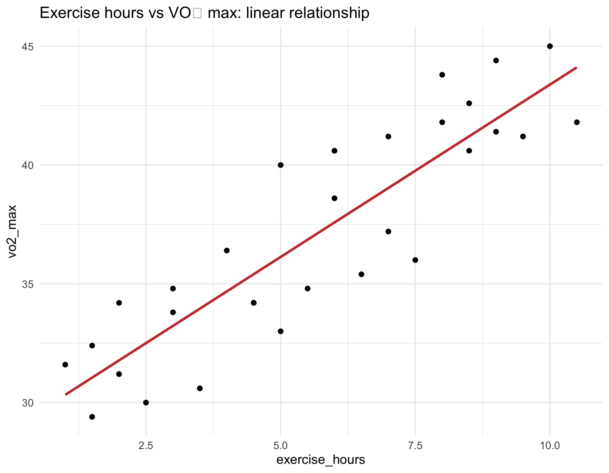
shape_good_model <- lm(vo2_max ~ exercise_hours, data = shape_good)
summary(shape_good_model)
Call:
lm(formula = vo2_max ~ exercise_hours, data = shape_good)
Residuals:
Min 1Q Median 3Q Max
-3.7577 -1.7871 0.0188 1.6040 3.8698
Coefficients:
Estimate Std. Error t value Pr(>|t|)
(Intercept) 28.8751 0.9229 31.287 < 2e-16 ***
exercise_hours 1.4510 0.1465 9.903 1.19e-10 ***
---
Signif. codes: 0 '***' 0.001 '**' 0.01 '*' 0.05 '.' 0.1 ' ' 1
Residual standard error: 2.235 on 28 degrees of freedom
Multiple R-squared: 0.7779, Adjusted R-squared: 0.77
F-statistic: 98.07 on 1 and 28 DF, p-value: 1.193e-10check_model(shape_good_model)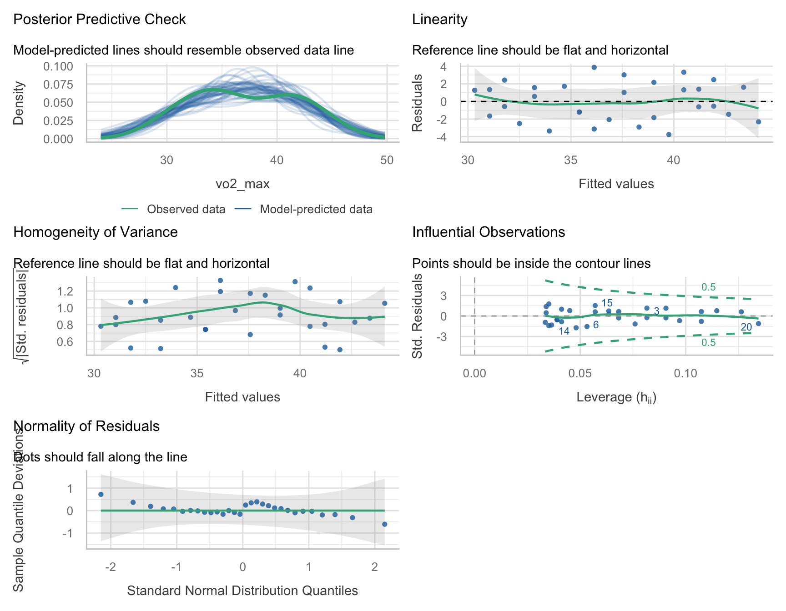
The Linearity green line is flat and near zero, showing no leftover pattern.
Study hours and quiz score (non-linear relationship)
Weekly study hours vs. quiz score.
Going from no studying to moderate studying helps a lot; extra hours past that add little because scores are near the maximum of the scale.
shape_bad <- data.frame(
study_hours = c(2, 4, 6, 9, 11, 13, 15, 17, 18, 20, 21, 23, 26, 29, 31, 34, 37, 39, 41, 43, 46, 48, 51, 53, 54, 56, 58, 60, 61, 62),
quiz_score = c(19.5, 30, 46.2, 55.9, 65.9, 68.3, 76.5, 76.4, 81.6, 81.3, 86.3, 84.4, 91.2, 88.8, 93, 90.4, 95.6, 92.2, 95.9, 92.6, 96.2, 92.9, 97.5, 92.9, 97.4, 93.5, 97.1, 93.4, 97.8, 93.2)
)Look at the raw scatter first; you can often already see the bend.
ggplot(shape_bad, aes(study_hours, quiz_score)) +
geom_point(size = 2) +
geom_smooth(method = "lm", se = FALSE, colour = "#C83B3B") +
labs(title = "Study hours vs quiz score: non-linear relationship fitted with a straight line") +
theme_minimal(base_size = 14)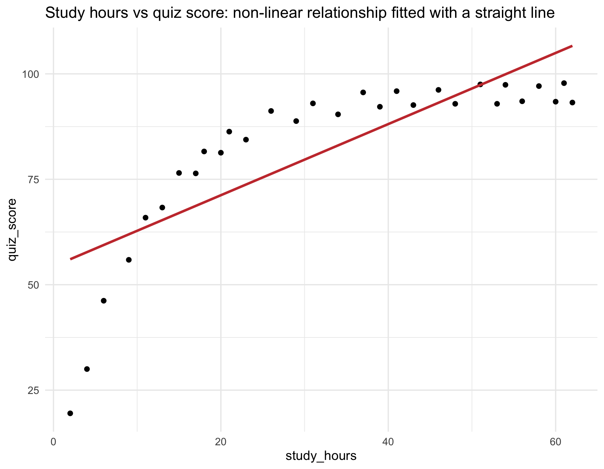
Next, inspect the diagnostic panel, especially the Linearity panel.
shape_bad_model <- lm(quiz_score ~ study_hours, data = shape_bad)
summary(shape_bad_model)
Call:
lm(formula = quiz_score ~ study_hours, data = shape_bad)
Residuals:
Min 1Q Median 3Q Max
-36.540 -6.168 2.626 9.864 14.918
Coefficients:
Estimate Std. Error t value Pr(>|t|)
(Intercept) 54.3531 4.5660 11.904 1.8e-12 ***
study_hours 0.8434 0.1205 7.001 1.3e-07 ***
---
Signif. codes: 0 '***' 0.001 '**' 0.01 '*' 0.05 '.' 0.1 ' ' 1
Residual standard error: 12.38 on 28 degrees of freedom
Multiple R-squared: 0.6365, Adjusted R-squared: 0.6235
F-statistic: 49.02 on 1 and 28 DF, p-value: 1.295e-07check_model(shape_bad_model)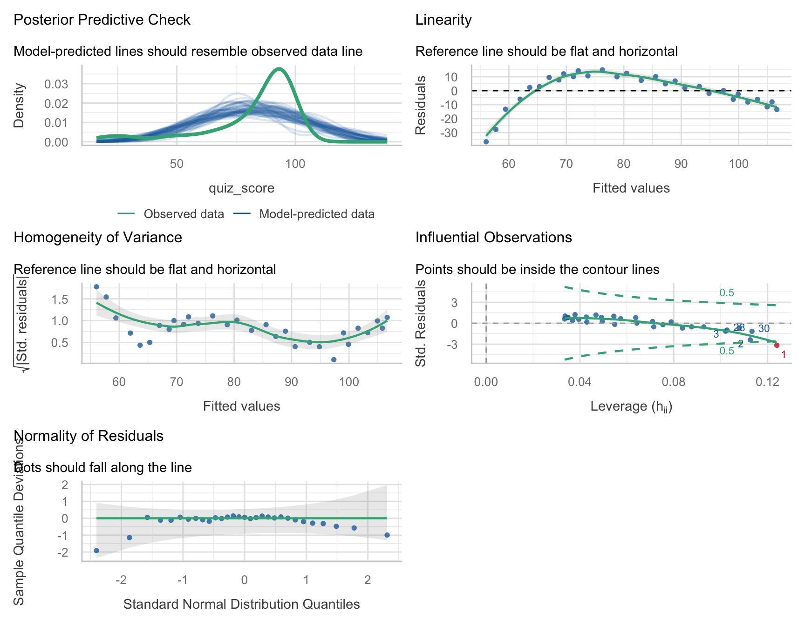
The green line in the Linearity panel arches, indicating a non-linear relationship.
So your model overestimates the quiz score for students who study for a few hours, and underestimates it for students who study for a lot of hours.
In such cases, you may need to transform your data or use a different kind of model.
Multiple predictors: hospital recovery time
Predict recovery time after knee surgery (days) from three continuous predictors:
- Age (years)
- Injury severity (clinician score, 1 to 10)
- Baseline mobility (pre-injury function score, 0 to 100)
There is no scatterplot that shows all three predictors and the outcome at once. You could plot recovery against each predictor separately, but each plot ignores the others.
mlr_shape <- data.frame(
age = c(81, 46, 29, 26, 37, 70, 42, 80, 32, 50, 32, 36, 68, 28, 49, 27, 56, 23, 81, 41, 60, 40, 82, 76, 81, 26, 60, 51, 80, 44, 63, 38, 33, 33, 45, 73, 52, 69, 72, 49, 70, 45, 68, 48, 76, 41, 27, 71, 76, 80, 56, 65, 68, 60, 65, 45, 32, 33, 45, 38),
severity = c(2.7, 5.5, 7.9, 7.2, 5.9, 6.9, 5.2, 5.3, 4, 4.8, 3.6, 6.4, 8.6, 6.6, 2.2, 6.1, 5, 4.9, 6.6, 9.4, 9, 8.9, 3.2, 7.7, 4.5, 1.7, 1.9, 7.9, 4.1, 4.8, 4.1, 1.1, 9.2, 2.6, 7.5, 6.1, 5.9, 4.2, 8.4, 2.7, 4.6, 5.4, 5.5, 4.5, 6.8, 4.1, 9.6, 1.4, 7.9, 2.8, 7.2, 4.6, 1.5, 7.6, 6.6, 6.7, 6.1, 8.1, 2.7, 8.5),
mobility = c(57, 53, 60, 33, 72, 41, 76, 28, 65, 24, 84, 77, 77, 55, 85, 68, 87, 80, 76, 79, 68, 56, 29, 60, 37, 73, 30, 89, 19, 92, 22, 87, 30, 31, 38, 79, 53, 77, 94, 80, 66, 83, 55, 68, 56, 57, 43, 80, 32, 49, 45, 78, 44, 74, 45, 72, 18, 55, 73, 93),
recovery_days = c(8.7, 10.6, 15.1, 14.9, 11.6, 14.5, 10.7, 13.3, 7.2, 13.4, 6.7, 12.1, 17, 11.4, 4.6, 9.7, 10.4, 9.2, 14.5, 17.6, 17.5, 17.5, 11.1, 16.6, 10.7, 4.1, 6.2, 15.5, 15.6, 8.9, 12.1, 3.1, 20.1, 7, 15.9, 13.8, 12.5, 9, 15.1, 6.2, 9.6, 10.7, 12.7, 9.3, 15.5, 7.7, 18.8, 4.7, 18.5, 8.6, 13.7, 8.8, 5.2, 15, 14.5, 12.6, 16.1, 15.7, 5.7, 14.3)
)Recovery versus injury severity alone looks roughly linear, so a single scatterplot does not raise any alarms.
ggplot(mlr_shape, aes(severity, recovery_days)) +
geom_point(size = 2) +
geom_smooth(method = "lm", se = FALSE, colour = "#C83B3B") +
labs(
title = "Recovery vs injury severity alone",
subtitle = "This ignores age and mobility, so it cannot diagnose the full model",
x = "Injury severity",
y = "Recovery (days)"
) +
theme_minimal(base_size = 14)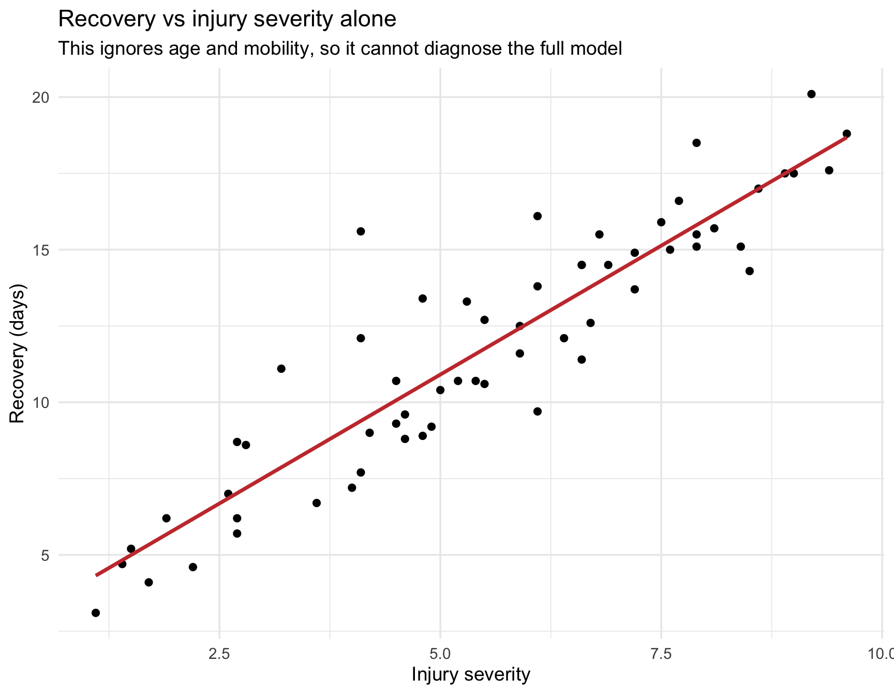
Fit the full multiple regression model and read the Linearity panel.
mlr_shape_model <- lm(recovery_days ~ age + severity + mobility, data = mlr_shape)
summary(mlr_shape_model)
Call:
lm(formula = recovery_days ~ age + severity + mobility, data = mlr_shape)
Residuals:
Min 1Q Median 3Q Max
-1.88906 -0.41058 0.09067 0.52406 3.11726
Coefficients:
Estimate Std. Error t value Pr(>|t|)
(Intercept) 3.225065 0.650789 4.956 7.02e-06 ***
age 0.039067 0.006774 5.767 3.63e-07 ***
severity 1.731785 0.053602 32.308 < 2e-16 ***
mobility -0.050946 0.005711 -8.921 2.42e-12 ***
---
Signif. codes: 0 '***' 0.001 '**' 0.01 '*' 0.05 '.' 0.1 ' ' 1
Residual standard error: 0.9259 on 56 degrees of freedom
Multiple R-squared: 0.9534, Adjusted R-squared: 0.9509
F-statistic: 382.1 on 3 and 56 DF, p-value: < 2.2e-16check_model(mlr_shape_model)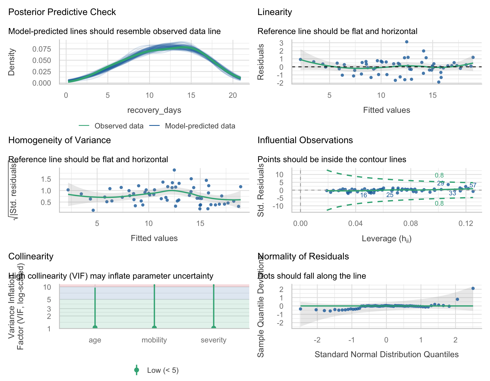
The green line in the Linearity panel is not flat. It dips in the middle and curves upward at the high end.
That pattern is intuitive once you think about the scales: for very severe injuries (high severity scores) and very low baseline mobility, recovery time accelerates faster than a straight-line model predicts. The linear model works reasonably in the middle of the range but misses the extremes.
You would not see that from one scatterplot of the outcome versus a single predictor. The diagnostic panel checks the fitted model as a whole.
Practice
Fertilizer applied (kg per plot) vs. crop yield (kg).
Fit the model, look at the scatter plot, then read the Linearity panel of the diagnostics. Does the relationship satisfy the linearity assumption?
practice_1 <- data.frame(
fertilizer = c(2, 4, 6, 8, 10, 12, 14, 16, 18, 20, 22, 24, 26, 28, 30, 32, 34, 36, 38, 40, 5, 11, 17, 23, 29, 35, 7, 15, 25, 33),
yield = c(13.9, 20.2, 32.7, 35, 42.6, 43.2, 50.9, 50.5, 56.6, 53.3, 58.1, 54.7, 60.6, 57.7, 62.3, 58.2, 61.6, 58.4, 63.1, 59.8, 26.9, 44.7, 51.1, 59.2, 57.5, 62.2, 32.5, 52.3, 56.6, 61.4)
)ggplot(practice_1, aes(fertilizer, yield)) +
geom_point(size = 2) +
geom_smooth(method = "lm", se = FALSE, colour = "#C83B3B") +
labs(title = "Fertilizer vs crop yield") +
theme_minimal(base_size = 14)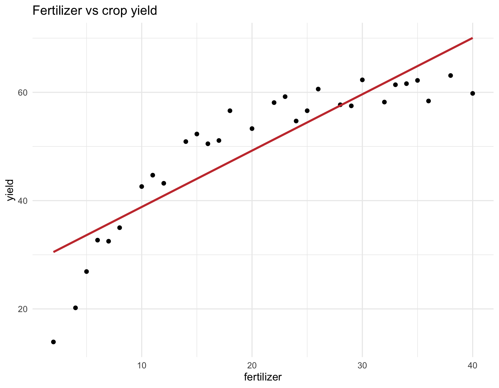
practice_1_model <- lm(yield ~ fertilizer, data = practice_1)
summary(practice_1_model)
Call:
lm(formula = yield ~ fertilizer, data = practice_1)
Residuals:
Min 1Q Median 3Q Max
-16.6011 -3.0640 0.7232 4.9501 9.4484
Coefficients:
Estimate Std. Error t value Pr(>|t|)
(Intercept) 28.4198 2.4972 11.381 5.14e-12 ***
fertilizer 1.0407 0.1065 9.773 1.60e-10 ***
---
Signif. codes: 0 '***' 0.001 '**' 0.01 '*' 0.05 '.' 0.1 ' ' 1
Residual standard error: 6.464 on 28 degrees of freedom
Multiple R-squared: 0.7733, Adjusted R-squared: 0.7652
F-statistic: 95.51 on 1 and 28 DF, p-value: 1.595e-10check_model(practice_1_model)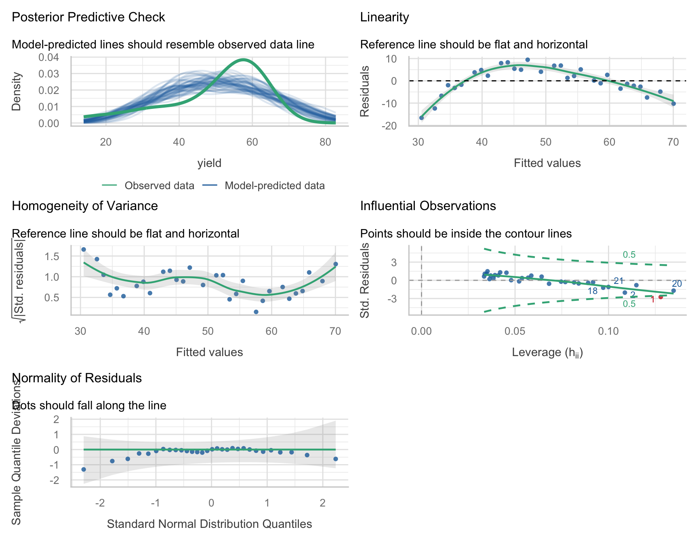
Your answer here:
H: Homoscedasticity (Equal Variance)
The question here is: does the spread of the residuals stay constant across the range?
For this, we read the Homogeneity of variance panel (scale-location).
A flat green line means even spread. If the line slopes upward, then the spread of the residuals increases with the fitted value.
Exercise duration and calories (homoscedastic variance)
Exercise duration vs. calories burned.
The spread looks the same for short and long workouts.
hom_good <- data.frame(
exercise_min = c(15, 20, 22, 25, 28, 30, 33, 35, 37, 40, 42, 45, 48, 50, 52, 55, 58, 60, 63, 65, 18, 27, 34, 39, 44, 49, 54, 57, 62, 36),
calories = c(149, 158, 193, 185, 218, 210, 250, 246, 281, 271, 299, 298, 338, 334, 366, 360, 393, 386, 426, 419, 167, 197, 255, 261, 311, 323, 377, 374, 419, 247)
)ggplot(hom_good, aes(exercise_min, calories)) +
geom_point(size = 2) +
geom_smooth(method = "lm", se = FALSE, colour = "#C83B3B") +
labs(title = "Exercise duration vs calories: even spread across the range") +
theme_minimal(base_size = 14)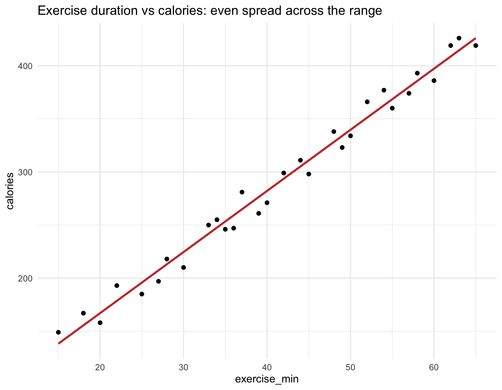
hom_good_model <- lm(calories ~ exercise_min, data = hom_good)
summary(hom_good_model)
Call:
lm(formula = calories ~ exercise_min, data = hom_good)
Residuals:
Min 1Q Median 3Q Max
-15.3638 -10.6766 -0.3638 10.1714 16.1454
Coefficients:
Estimate Std. Error t value Pr(>|t|)
(Intercept) 51.934 6.218 8.352 4.37e-09 ***
exercise_min 5.755 0.142 40.535 < 2e-16 ***
---
Signif. codes: 0 '***' 0.001 '**' 0.01 '*' 0.05 '.' 0.1 ' ' 1
Residual standard error: 11.04 on 28 degrees of freedom
Multiple R-squared: 0.9832, Adjusted R-squared: 0.9826
F-statistic: 1643 on 1 and 28 DF, p-value: < 2.2e-16check_model(hom_good_model)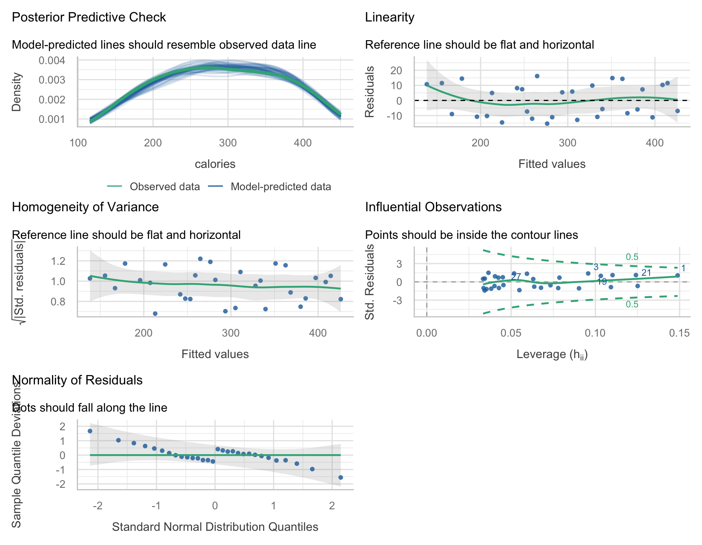
Here the Homogeneity green line is roughly flat.
This means that the spread of the residuals is roughly constant across the range of the predictor.
Income and medical spending (heteroscedasticity)
Household income vs. out-of-pocket medical spending.
Wealthier households have far more discretionary spending, so the spread gets larger at the high end, giving you a fan-shaped scatter.
hom_bad <- data.frame(
income_k = c(20, 25, 28, 32, 35, 38, 42, 45, 48, 52, 55, 58, 62, 65, 68, 72, 75, 80, 85, 90, 95, 100, 110, 120, 22, 40, 56, 70, 88, 105),
medical_spend = c(464, 475, 573, 622, 495, 786, 593, 943, 744, 828, 682, 1052, 1000, 919, 842, 1294, 851, 1526, 961, 994, 1573, 1052, 2024, 2030, 555, 560, 1152, 718, 1729, 855)
)ggplot(hom_bad, aes(income_k, medical_spend)) +
geom_point(size = 2) +
geom_smooth(method = "lm", se = FALSE, colour = "#C83B3B") +
labs(title = "Income vs medical spending: residual spread increases with income") +
theme_minimal(base_size = 14)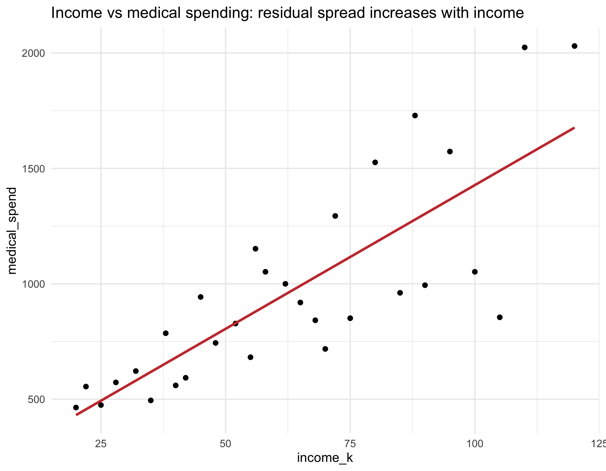
hom_bad_model <- lm(medical_spend ~ income_k, data = hom_bad)
summary(hom_bad_model)
Call:
lm(formula = medical_spend ~ income_k, data = hom_bad)
Residuals:
Min 1Q Median 3Q Max
-634.77 -169.68 15.39 187.11 471.97
Coefficients:
Estimate Std. Error t value Pr(>|t|)
(Intercept) 182.350 120.622 1.512 0.142
income_k 12.452 1.764 7.060 1.11e-07 ***
---
Signif. codes: 0 '***' 0.001 '**' 0.01 '*' 0.05 '.' 0.1 ' ' 1
Residual standard error: 263.9 on 28 degrees of freedom
Multiple R-squared: 0.6403, Adjusted R-squared: 0.6275
F-statistic: 49.85 on 1 and 28 DF, p-value: 1.113e-07check_model(hom_bad_model)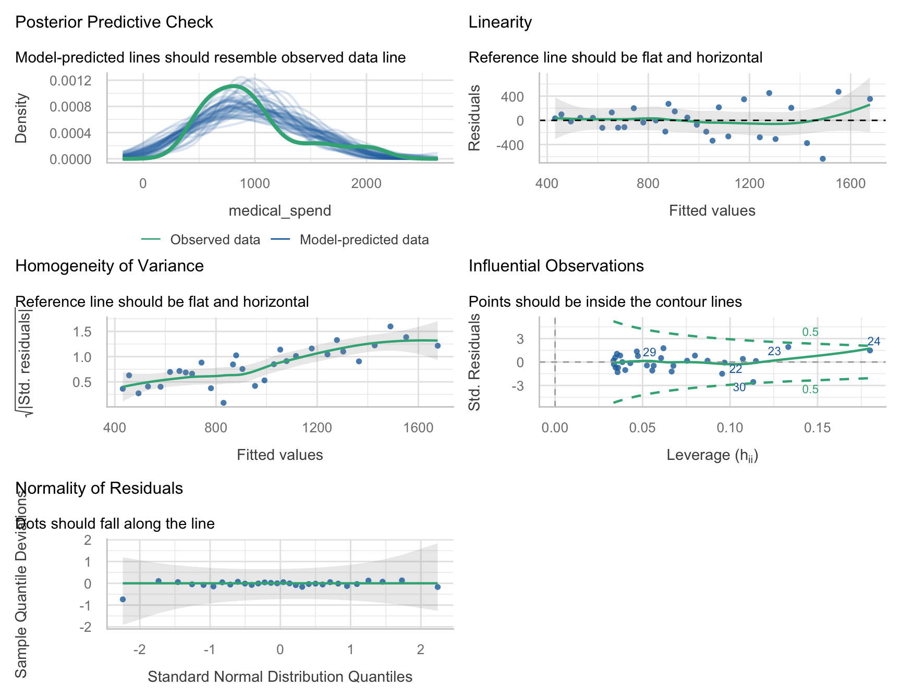
The Homogeneity of variance green line slopes upward, indicating that the spread of the residuals increases with the fitted value.
This is a sign of heteroscedasticity.
It means that your model’s standard errors are too large for high-income households, and too small for low-income households.
Practice
Daily patient volume at a clinic vs. patient waiting time (minutes).
Fit the model, look at the scatter plot, then read the Homogeneity of variance panel. Does the relationship satisfy the equal-variance assumption?
practice_2 <- data.frame(
patient_volume = c(10, 14, 18, 22, 26, 30, 34, 38, 42, 46, 50, 54, 58, 62, 66, 70, 74, 78, 82, 90, 12, 28, 44, 60, 76, 86, 16, 36, 56, 72),
wait_time = c(23, 31, 28, 41, 33, 47, 35, 63, 41, 71, 40, 78, 93, 48, 42, 116, 52, 131, 52, 39, 28, 31, 74, 39, 131, 46, 33, 33, 96, 38)
)ggplot(practice_2, aes(patient_volume, wait_time)) +
geom_point(size = 2) +
geom_smooth(method = "lm", se = FALSE, colour = "#C83B3B") +
labs(title = "Patient volume vs waiting time") +
theme_minimal(base_size = 14)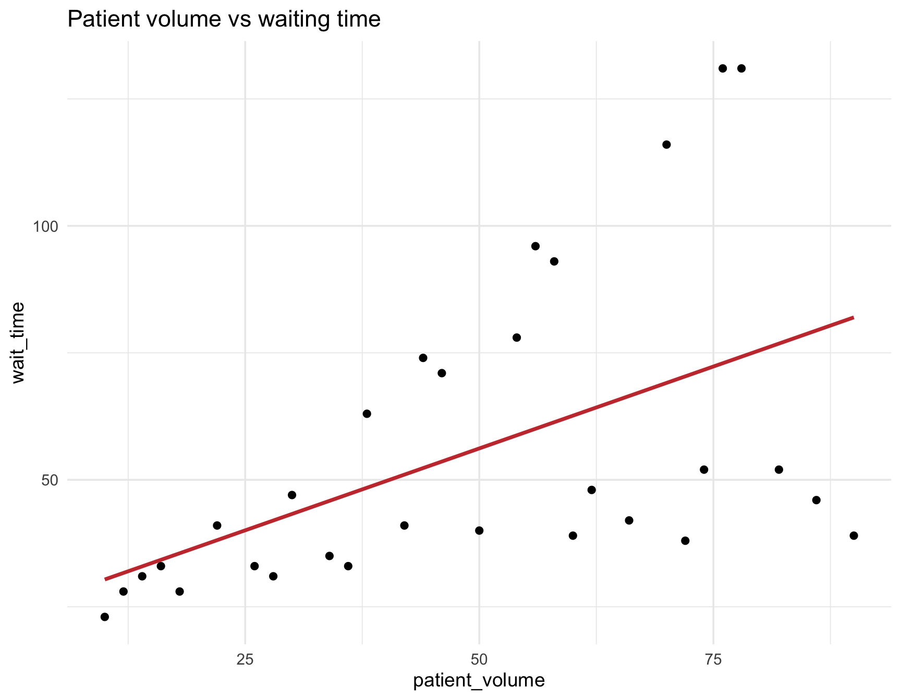
practice_2_model <- lm(wait_time ~ patient_volume, data = practice_2)
summary(practice_2_model)
Call:
lm(formula = wait_time ~ patient_volume, data = practice_2)
Residuals:
Min 1Q Median 3Q Max
-42.979 -16.110 -7.452 16.695 58.052
Coefficients:
Estimate Std. Error t value Pr(>|t|)
(Intercept) 23.9204 11.0507 2.165 0.03910 *
patient_volume 0.6451 0.2053 3.142 0.00394 **
---
Signif. codes: 0 '***' 0.001 '**' 0.01 '*' 0.05 '.' 0.1 ' ' 1
Residual standard error: 26.65 on 28 degrees of freedom
Multiple R-squared: 0.2607, Adjusted R-squared: 0.2343
F-statistic: 9.875 on 1 and 28 DF, p-value: 0.003937check_model(practice_2_model)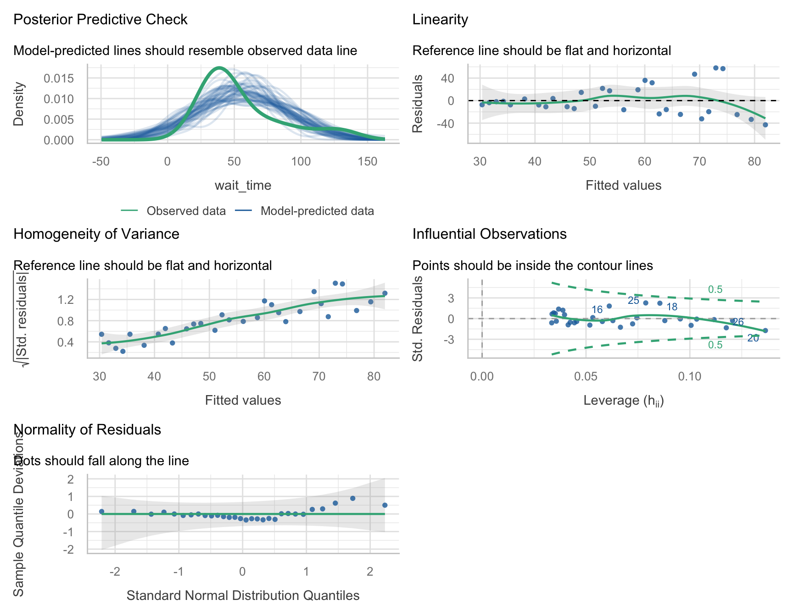
Your answer here:
I: Influential Points
The question here is: is any single observation pulling the line around?
For this, we read the Influential observations panel (residuals vs leverage).
Points that sit outside the dashed contour combine an unusual x-value (leverage) with a large residual (off the line).
BMI and cholesterol without outliers (no influential points)
BMI vs. cholesterol from a routine screening, with no data-entry errors.
inf_bad <- data.frame(
bmi = c(19, 20, 21, 22, 23, 23.5, 24, 24.5, 25, 25.5, 26, 26.5, 27, 27.5, 28, 28.5, 29, 29.5, 30, 30.5, 31, 20.5, 23, 25.5, 27, 29, 22, 24.5, 26.5, 28.5, 42),
cholesterol = c(216, 204, 229, 211, 228, 214, 236, 226, 249, 225, 243, 225, 252, 238, 258, 240, 265, 243, 261, 245, 276, 220, 214, 241, 234, 265, 213, 242, 229, 256, 130)
)
inf_good <- inf_bad %>% filter(bmi != 42)ggplot(inf_good, aes(bmi, cholesterol)) +
geom_point(size = 2) +
geom_smooth(method = "lm", se = FALSE, colour = "#C83B3B") +
labs(title = "BMI vs cholesterol: no influential observations") +
theme_minimal(base_size = 14)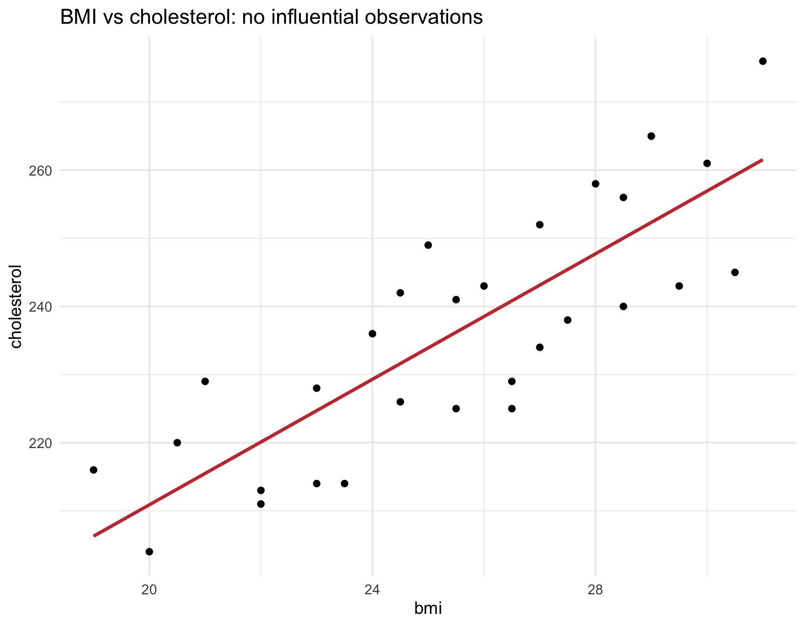
inf_good_model <- lm(cholesterol ~ bmi, data = inf_good)
summary(inf_good_model)
Call:
lm(formula = cholesterol ~ bmi, data = inf_good)
Residuals:
Min 1Q Median 3Q Max
-15.822 -9.807 3.678 9.511 15.087
Coefficients:
Estimate Std. Error t value Pr(>|t|)
(Intercept) 118.761 15.342 7.741 1.97e-08 ***
bmi 4.606 0.595 7.742 1.96e-08 ***
---
Signif. codes: 0 '***' 0.001 '**' 0.01 '*' 0.05 '.' 0.1 ' ' 1
Residual standard error: 10.54 on 28 degrees of freedom
Multiple R-squared: 0.6816, Adjusted R-squared: 0.6702
F-statistic: 59.94 on 1 and 28 DF, p-value: 1.963e-08check_model(inf_good_model)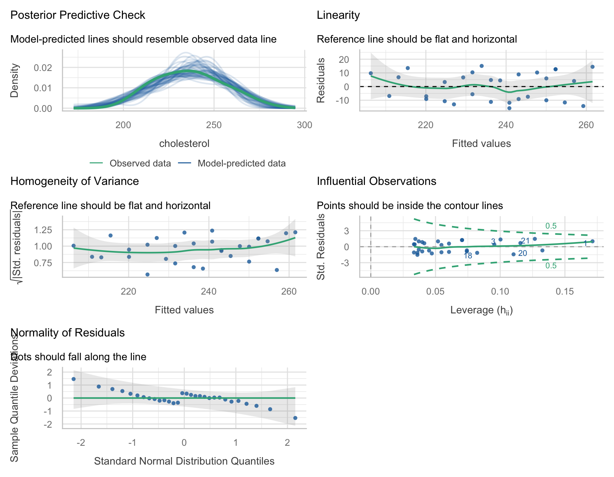
Every point stays well inside the dashed contour in the Influential observations panel.
No single observation stands out as influential.
BMI and cholesterol with data-entry error (influential point)
The same screening, but with a likely data-entry error: BMI = 42 paired with cholesterol = 130, which is unusually low for that BMI.
ggplot(inf_bad, aes(bmi, cholesterol)) +
geom_point(size = 2) +
geom_smooth(method = "lm", se = FALSE, colour = "#C83B3B") +
labs(title = "BMI vs cholesterol: influential observation at BMI 42") +
theme_minimal(base_size = 14)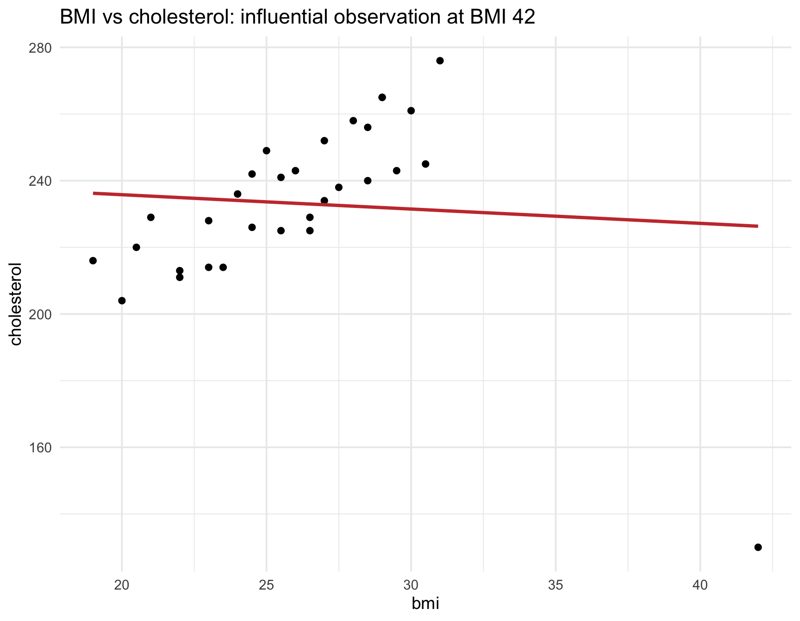
To diagnose, we look at the Influential observations panel in the check_model() output.
inf_bad_model <- lm(cholesterol ~ bmi, data = inf_bad)
check_model(inf_bad_model)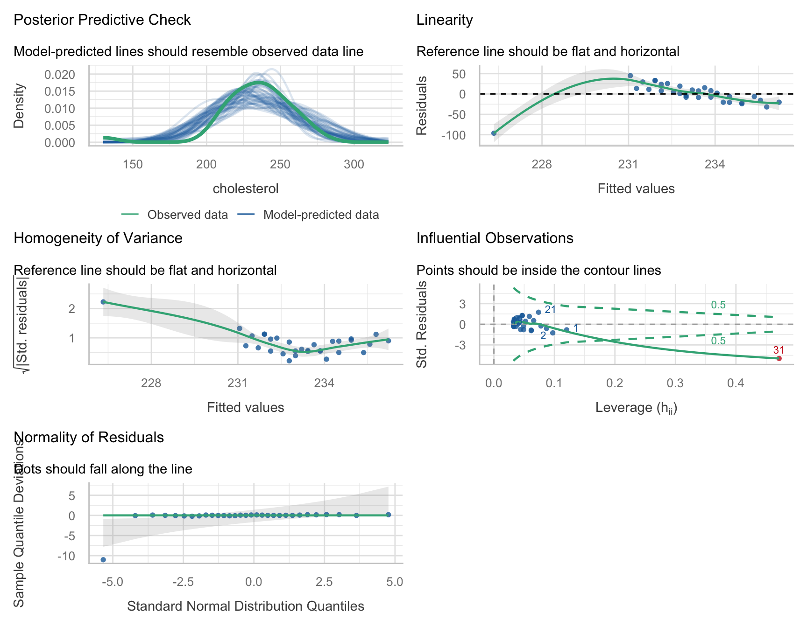
In the Influential observations panel, one point lies far to the right, outside the dashed contour.
It has both high leverage (BMI 42 is well above the rest of the data) and a large residual (far from the fitted line).
Removing it would noticeably change the fit.
Practice
Blood lead level (µg/dL) vs. reaction time on a cognitive test (milliseconds).
Fit the model, look at the scatter plot, then read the Influential observations panel. Is any single observation pulling the line around?
practice_3 <- data.frame(
lead_level = c(2, 4, 6, 8, 10, 12, 14, 16, 18, 20, 22, 24, 26, 28, 30, 3, 9, 15, 21, 27, 5, 11, 17, 23, 29, 7, 13, 19, 25, 45),
reaction_time = c(208, 208, 219, 217, 227, 226, 238, 239, 250, 247, 257, 256, 268, 268, 279, 205, 225, 234, 256, 267, 218, 225, 245, 254, 276, 216, 237, 245, 265, 215)
)ggplot(practice_3, aes(lead_level, reaction_time)) +
geom_point(size = 2) +
geom_smooth(method = "lm", se = FALSE, colour = "#C83B3B") +
labs(title = "Blood lead level vs reaction time") +
theme_minimal(base_size = 14)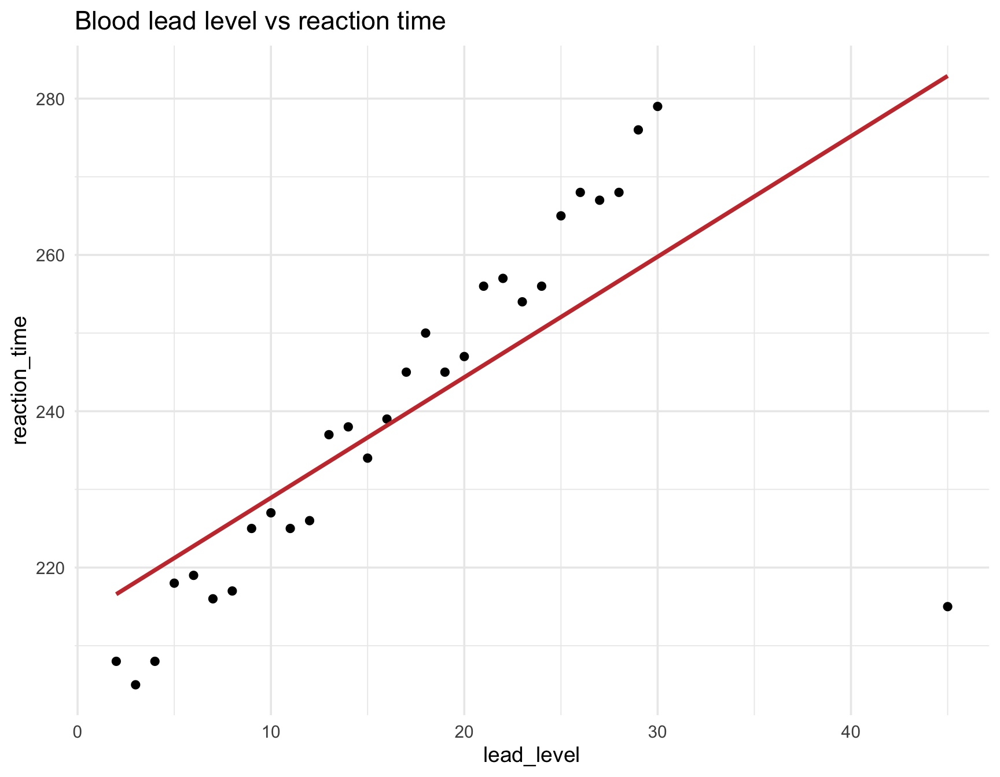
practice_3_model <- lm(reaction_time ~ lead_level, data = practice_3)
summary(practice_3_model)
Call:
lm(formula = reaction_time ~ lead_level, data = practice_3)
Residuals:
Min 1Q Median 3Q Max
-67.902 -5.037 2.426 9.363 19.232
Coefficients:
Estimate Std. Error t value Pr(>|t|)
(Intercept) 213.4992 5.7850 36.906 < 2e-16 ***
lead_level 1.5423 0.2957 5.215 1.54e-05 ***
---
Signif. codes: 0 '***' 0.001 '**' 0.01 '*' 0.05 '.' 0.1 ' ' 1
Residual standard error: 15.77 on 28 degrees of freedom
Multiple R-squared: 0.4927, Adjusted R-squared: 0.4746
F-statistic: 27.2 on 1 and 28 DF, p-value: 1.541e-05check_model(practice_3_model)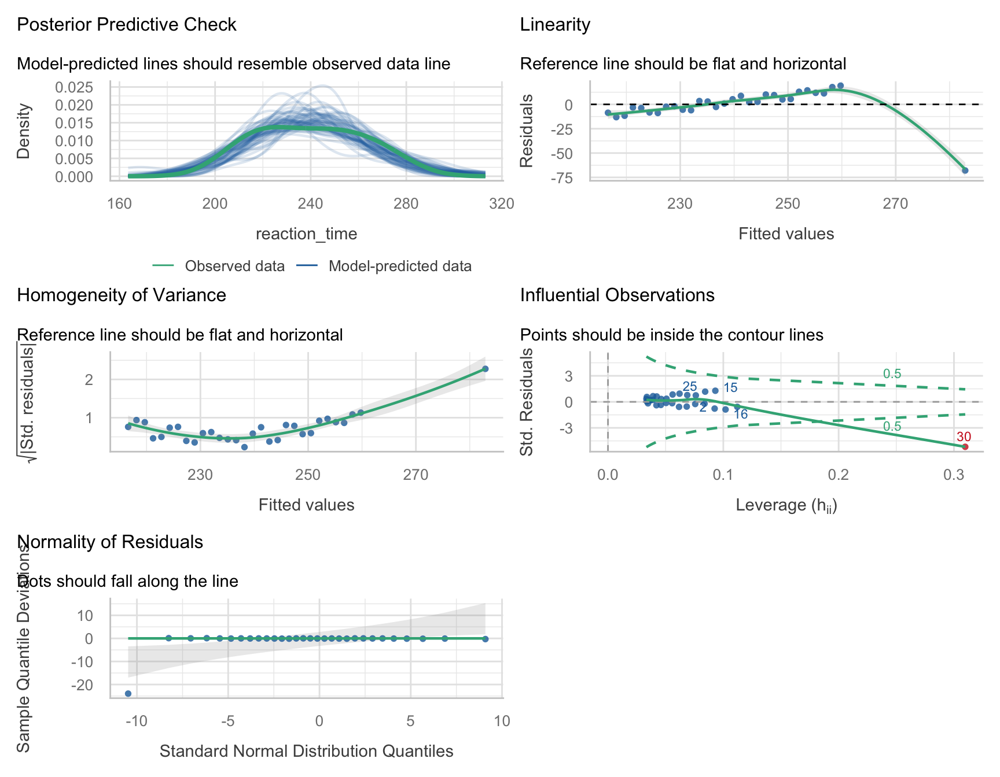
Your answer here:
N: Normality of Residuals
The question: are the prediction errors roughly bell-shaped?
We read the Normality of residuals panel (the Q-Q plot).
Points close to the reference line are good; points diverging at the ends indicate skew or heavy tails.
Height and lung capacity (normal residuals)
Height vs. lung capacity.
Errors scatter symmetrically around the line.
norm_good <- data.frame(
height_cm = c(154.7, 155.6, 155.8, 156.3, 157.6, 158, 158.6, 159.4, 159.6, 160.6, 160.4, 161, 162, 162.4, 163.3, 164.2, 164.8, 164.7, 165.8, 166.4, 166.6, 167.1, 167.8, 169, 168.9, 169.7, 169.9, 171.4, 171.4, 171.7, 173, 173.5, 173.7, 174.7, 174.9, 175.4, 175.9, 176.8, 177.4, 177.8, 179.1, 179, 180.1, 180.5, 181.2, 182.2, 181.9, 182.9, 183.8, 184, 185.1, 185.8, 185.8, 185.9, 187.1, 188, 188.4, 188.3, 189, 190.1),
lung_capacity = c(3.54, 3.88, 3.61, 3.92, 3.98, 3.75, 3.43, 3.89, 3.59, 3.67, 3.47, 3.7, 3.98, 3.41, 3.78, 4.08, 3.85, 3.91, 3.77, 3.93, 3.82, 3.72, 3.99, 4.2, 4.27, 4.1, 3.78, 4.13, 4.15, 4.4, 4.08, 4.16, 4.2, 4.21, 4.54, 4.67, 4.55, 4.54, 4.54, 4.34, 4.62, 4.53, 4.49, 4.57, 4.67, 4.41, 4.25, 4.92, 4.64, 4.8, 4.63, 4.8, 5.03, 4.88, 4.94, 4.92, 5.01, 4.93, 4.8, 5.17)
)ggplot(norm_good, aes(height_cm, lung_capacity)) +
geom_point(size = 2) +
geom_smooth(method = "lm", se = FALSE, colour = "#C83B3B") +
labs(title = "Height vs lung capacity: symmetric scatter around the line") +
theme_minimal(base_size = 14)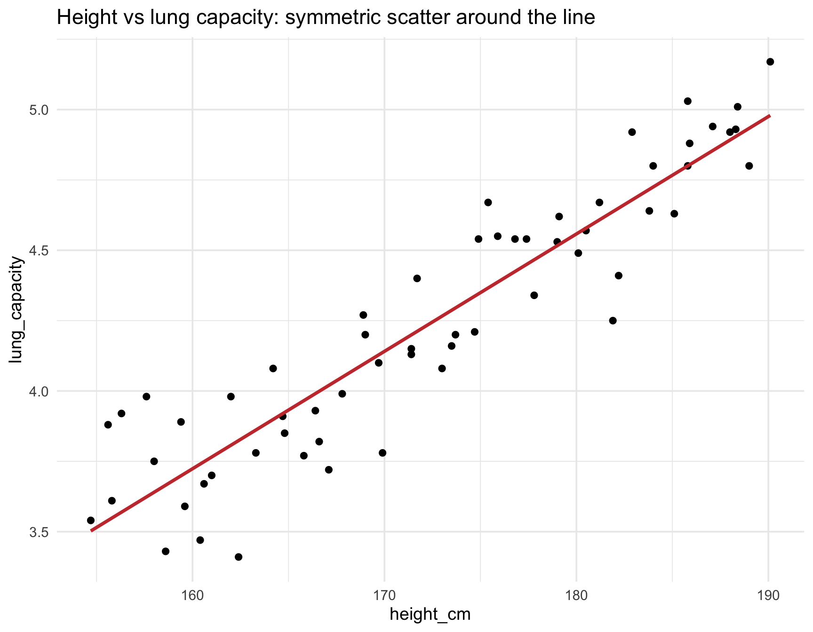
norm_good_model <- lm(lung_capacity ~ height_cm, data = norm_good)
summary(norm_good_model)
Call:
lm(formula = lung_capacity ~ height_cm, data = norm_good)
Residuals:
Min 1Q Median 3Q Max
-0.41372 -0.11923 -0.00446 0.11126 0.35655
Coefficients:
Estimate Std. Error t value Pr(>|t|)
(Intercept) -2.951996 0.392626 -7.519 3.94e-10 ***
height_cm 0.041722 0.002273 18.356 < 2e-16 ***
---
Signif. codes: 0 '***' 0.001 '**' 0.01 '*' 0.05 '.' 0.1 ' ' 1
Residual standard error: 0.1817 on 58 degrees of freedom
Multiple R-squared: 0.8531, Adjusted R-squared: 0.8506
F-statistic: 337 on 1 and 58 DF, p-value: < 2.2e-16check_model(norm_good_model)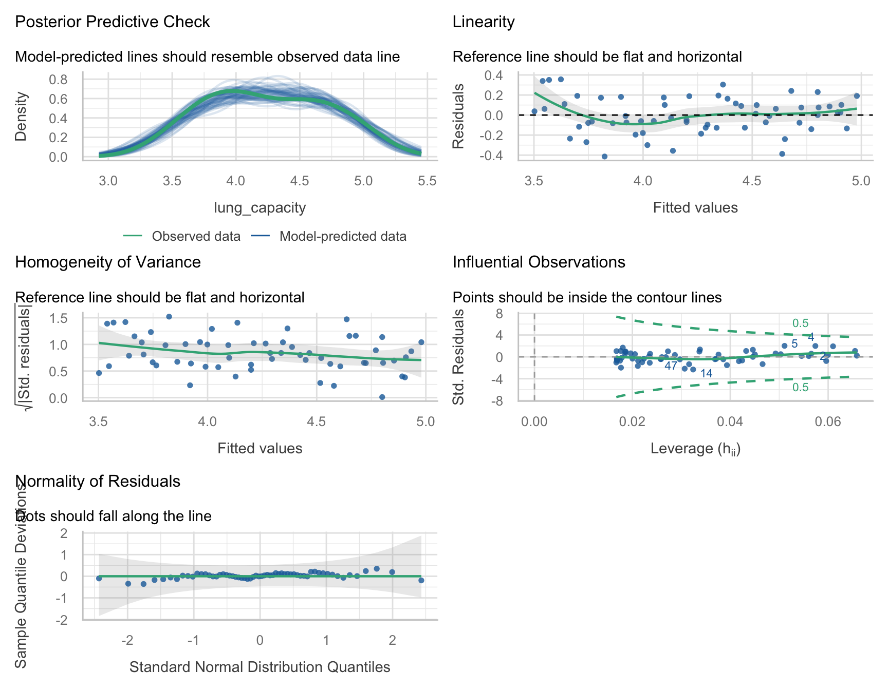
The Q-Q points sit on (or very near) the diagonal across the whole range, and inside the shaded band.
That is what approximately normal residuals look like.
Poverty rate and ER visits (non-normal residuals)
Neighbourhood poverty rate vs. ER visits per 1,000.
Most neighbourhoods follow the trend, but several have unusually high visit rates, producing strongly right-skewed residuals.
norm_bad <- data.frame(
poverty_rate = c(5, 7, 8, 10, 12, 13, 15, 16, 18, 19, 20, 22, 23, 25, 27, 28, 30, 32, 34, 35, 37, 38, 40, 42, 6, 14, 21, 29, 36, 41),
er_visits = c(113, 105, 107, 112, 213, 122, 119, 124, 205, 154, 150, 159, 243, 155, 176, 178, 280, 191, 207, 199, 280, 195, 222, 220, 99, 129, 219, 181, 211, 296)
)ggplot(norm_bad, aes(poverty_rate, er_visits)) +
geom_point(size = 2) +
geom_smooth(method = "lm", se = FALSE, colour = "#C83B3B") +
labs(title = "Poverty rate vs ER visits: right-skewed residuals") +
theme_minimal(base_size = 14)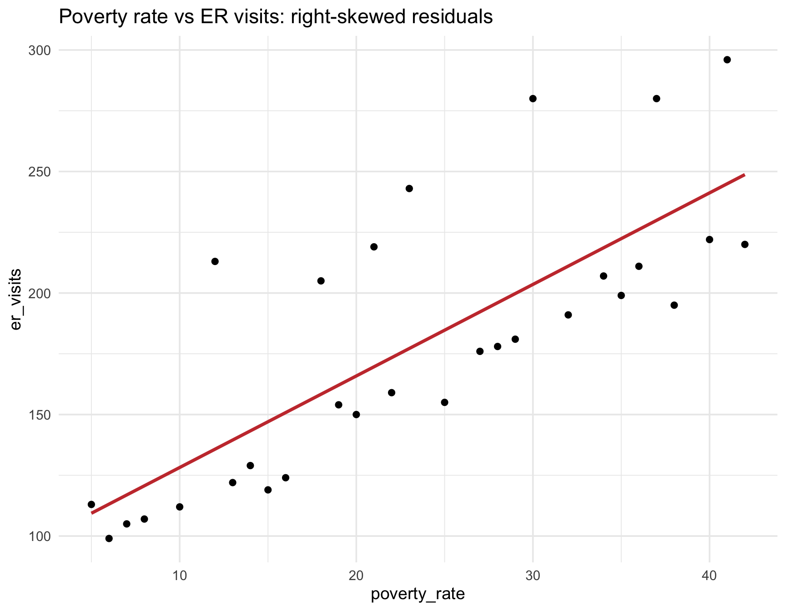
norm_bad_model <- lm(er_visits ~ poverty_rate, data = norm_bad)
summary(norm_bad_model)
Call:
lm(formula = er_visits ~ poverty_rate, data = norm_bad)
Residuals:
Min 1Q Median 3Q Max
-38.665 -19.090 -14.767 0.696 77.263
Coefficients:
Estimate Std. Error t value Pr(>|t|)
(Intercept) 90.5395 14.9720 6.047 1.61e-06 ***
poverty_rate 3.7665 0.5764 6.534 4.40e-07 ***
---
Signif. codes: 0 '***' 0.001 '**' 0.01 '*' 0.05 '.' 0.1 ' ' 1
Residual standard error: 35.38 on 28 degrees of freedom
Multiple R-squared: 0.604, Adjusted R-squared: 0.5898
F-statistic: 42.7 on 1 and 28 DF, p-value: 4.399e-07check_model(norm_bad_model)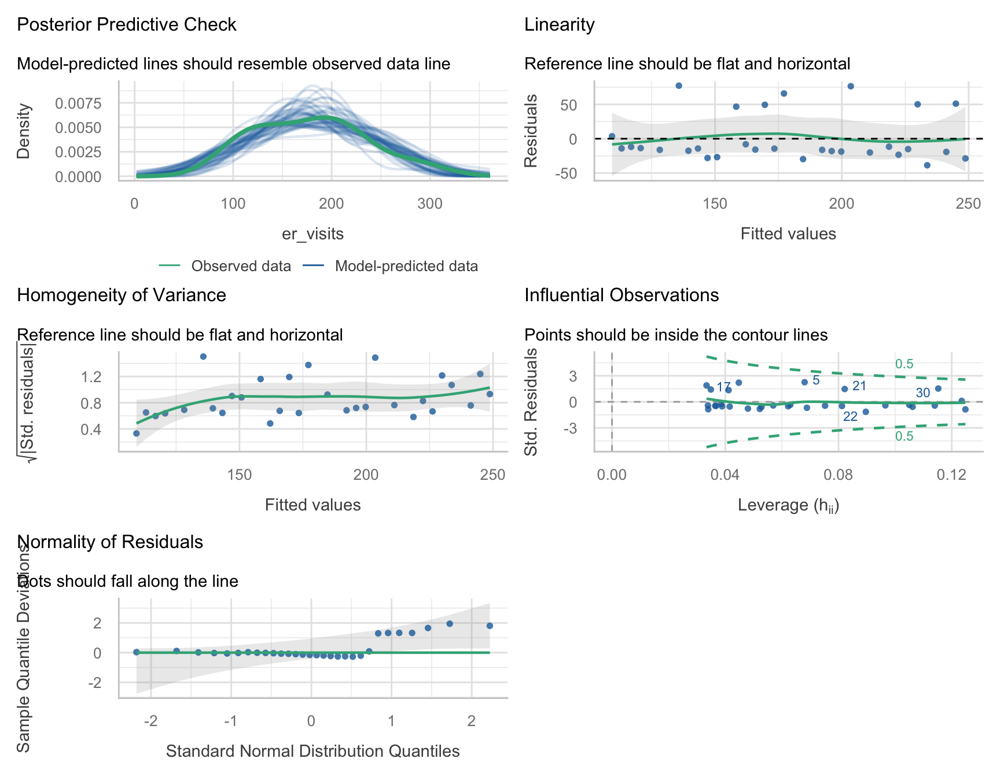
In the Normality Q-Q panel, the points bend away from the reference line at the upper end.
That is the long right tail of the skewed residuals.
Practice
Gestational age at delivery (weeks) vs. birth weight (grams).
Fit the model, look at the scatter plot, then read the Normality of residuals panel. Are the residuals roughly bell-shaped?
practice_4 <- data.frame(
gestational_age = c(35, 35.5, 36, 36.5, 37, 37.5, 38, 38.5, 39, 39.5, 40, 40.5, 41, 41.5, 42, 35.2, 36.8, 37.6, 38.4, 39.2, 40.2, 41.2, 36.2, 37.2, 38.2, 39.6, 40.6, 37.8, 39.8, 41.6),
birth_weight = c(2730, 2506, 2639, 2903, 2674, 3008, 3016, 3212, 3240, 3326, 3469, 3667, 3713, 3836, 3789, 2633, 2775, 2915, 3121, 3525, 3463, 3791, 2765, 2975, 3157, 3531, 3676, 3009, 3538, 3816)
)ggplot(practice_4, aes(gestational_age, birth_weight)) +
geom_point(size = 2) +
geom_smooth(method = "lm", se = FALSE, colour = "#C83B3B") +
labs(title = "Gestational age vs birth weight") +
theme_minimal(base_size = 14)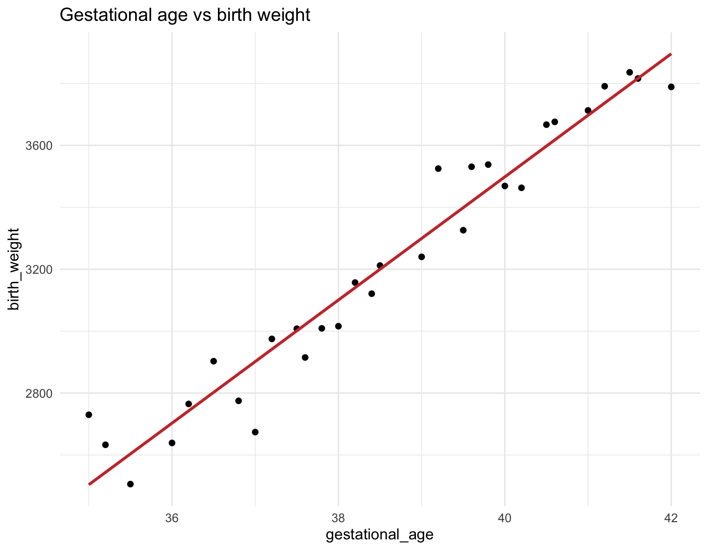
practice_4_model <- lm(birth_weight ~ gestational_age, data = practice_4)
summary(practice_4_model)
Call:
lm(formula = birth_weight ~ gestational_age, data = practice_4)
Residuals:
Min 1Q Median 3Q Max
-227.735 -70.620 9.413 57.319 225.970
Coefficients:
Estimate Std. Error t value Pr(>|t|)
(Intercept) -4455.803 341.606 -13.04 2.03e-13 ***
gestational_age 198.852 8.845 22.48 < 2e-16 ***
---
Signif. codes: 0 '***' 0.001 '**' 0.01 '*' 0.05 '.' 0.1 ' ' 1
Residual standard error: 96.73 on 28 degrees of freedom
Multiple R-squared: 0.9475, Adjusted R-squared: 0.9456
F-statistic: 505.4 on 1 and 28 DF, p-value: < 2.2e-16check_model(practice_4_model)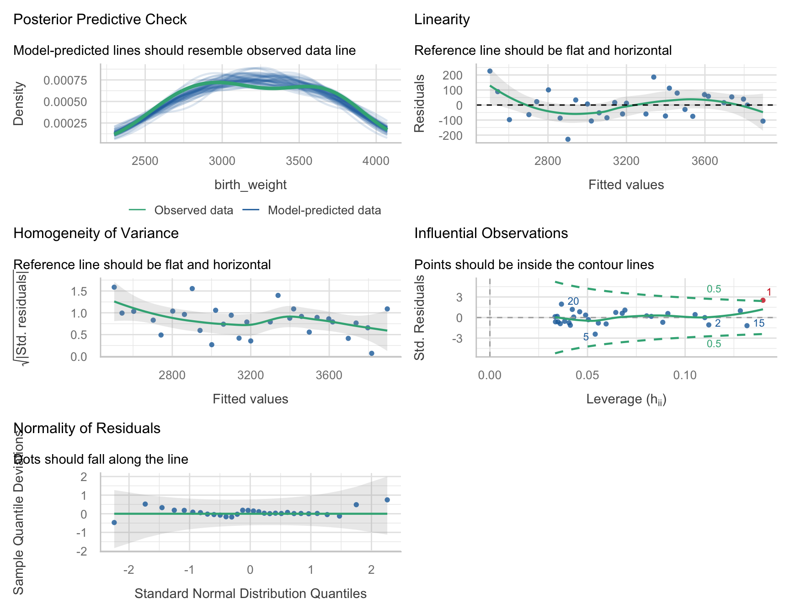
Your answer here:
Multiple linear regression: no multicollinearity
When you have two or more predictors, check that they are not too strongly related to each other.
The question: can each predictor’s slope be estimated separately, or do the predictors overlap so much that the model cannot tell their individual effects apart?
Use check_collinearity() from the performance package. It reports the variance inflation factor (VIF) for each predictor. As a rule of thumb, VIF above about 5 suggests problematic overlap. (Some sources use 10 as the cutoff.)
The SHIN checks above still apply to multiple regression: check_model() works the same way for homoscedasticity, influential points, and normality. This section covers the extra check that only arises with multiple predictors.
N: No multicollinearity (low overlap among predictors)
Resting heart rate from lifestyle factors (low multicollinearity)
Predict resting heart rate (bpm) from weekly exercise hours, nightly sleep hours, and daily caffeine intake (mg). These predictors measure different aspects of lifestyle, so they should not overlap much.
mlr_col_good <- data.frame(
exercise_h = c(2.5, 8.3, 4.5, 3.9, 6.4, 6.4, 2.1, 3.7, 6.2, 6.7, 5.6, 5.5, 5.8, 6, 8.8, 8.5, 2, 7.3, 9.1, 3.5, 3.1, 1.1, 2.2, 1.8, 3.1, 8.1, 6.4, 9.2, 6, 7.8, 4.4, 4.4, 2.5, 5.1, 3.3, 4, 9, 2.8, 6.2, 2.9, 3.5, 8.1, 2.6, 6.1, 4.8, 3.4, 1.4, 1.9, 3.8, 8.2),
sleep_h = c(5.9, 5.9, 8.5, 9, 8.4, 8.6, 6.9, 5.9, 5.5, 6.1, 8.3, 5.2, 8.2, 5.4, 8.1, 6.2, 8.1, 7.2, 6.4, 5.4, 8, 8, 8.6, 8.9, 7.1, 7.2, 5.7, 5.7, 8.1, 8, 8.1, 7.6, 6.5, 5, 8.8, 8.4, 5.9, 7, 7.5, 8.7, 5, 6.1, 6.7, 8.3, 8.5, 6, 6.3, 6.2, 5.7, 7.7),
caffeine_mg = c(307, 273, 84, 285, 242, 136, 16, 161, 32, 125, 130, 31, 60, 61, 365, 281, 328, 266, 86, 185, 287, 329, 328, 80, 240, 172, 255, 168, 352, 128, 126, 197, 135, 89, 332, 215, 39, 44, 230, 215, 195, 128, 272, 345, 339, 107, 242, 332, 237, 80),
resting_hr = c(71, 65, 62, 61, 61, 65, 63, 67, 64, 63, 61, 62, 57, 63, 58, 58, 65, 60, 60, 65, 66, 68, 69, 67, 66, 61, 62, 62, 65, 61, 64, 64, 60, 61, 67, 62, 56, 62, 67, 63, 65, 59, 68, 64, 64, 60, 70, 71, 65, 59)
)mlr_col_good_model <- lm(resting_hr ~ exercise_h + sleep_h + caffeine_mg, data = mlr_col_good)
summary(mlr_col_good_model)
Call:
lm(formula = resting_hr ~ exercise_h + sleep_h + caffeine_mg,
data = mlr_col_good)
Residuals:
Min 1Q Median 3Q Max
-5.2534 -1.6253 0.2116 1.5405 4.5267
Coefficients:
Estimate Std. Error t value Pr(>|t|)
(Intercept) 69.442311 2.211677 31.398 < 2e-16 ***
exercise_h -0.926732 0.145660 -6.362 8.27e-08 ***
sleep_h -0.561435 0.287471 -1.953 0.056917 .
caffeine_mg 0.013165 0.003442 3.825 0.000393 ***
---
Signif. codes: 0 '***' 0.001 '**' 0.01 '*' 0.05 '.' 0.1 ' ' 1
Residual standard error: 2.34 on 46 degrees of freedom
Multiple R-squared: 0.5829, Adjusted R-squared: 0.5557
F-statistic: 21.43 on 3 and 46 DF, p-value: 7.846e-09check_collinearity(mlr_col_good_model)# Check for Multicollinearity
Low Correlation
Term VIF VIF 95% CI adj. VIF Tolerance Tolerance 95% CI
exercise_h 1.05 [1.00, 11.01] 1.02 0.95 [0.09, 1.00]
sleep_h 1.12 [1.01, 2.44] 1.06 0.89 [0.41, 0.99]
caffeine_mg 1.14 [1.01, 2.30] 1.07 0.88 [0.44, 0.99]All VIF values are close to 1, which is what you want. Each predictor carries distinct information.
Fasting glucose from weight and BMI (multicollinearity)
Predict fasting glucose (mg/dL) from weight (kg), BMI, and age (years).
Weight and BMI overlap: BMI is calculated from weight and height, so it carries much of the same body-size information as weight. Including both in one model makes it hard to interpret their separate slopes.
mlr_col_bad <- data.frame(
weight_kg = c(58.5, 95.9, 102.1, 68.5, 63.5, 56.7, 63.9, 87.1, 56.1, 55.4, 74.6, 95.7, 73.8, 74, 68.2, 77, 77.9, 82, 88.3, 60.6, 65.9, 94.4, 59.9, 90.5, 65.9, 68.4, 80.2, 64.4, 77, 88.5, 67, 99.7, 99.1, 95.7, 86.7, 102.1, 89.7, 97.2, 74.2, 74.6, 84.4, 81.5, 103.9, 64.9, 97.2, 59.8, 74.1, 57.3, 62.6, 93.7),
bmi = c(20.5, 34, 35.3, 24.9, 21, 15.9, 20.9, 28.4, 17.9, 16.4, 22.8, 33.1, 20.7, 24.4, 25.1, 29.7, 30.4, 25, 31.7, 18.3, 23.9, 29.1, 19.3, 32.1, 23.9, 19.4, 23.9, 19.9, 29.7, 26.1, 22.1, 28.8, 39.2, 36, 26.8, 38, 36.4, 28.1, 26.3, 29.5, 26.3, 31.8, 40.1, 23, 31.7, 20.2, 22.4, 20.3, 22.7, 33.6),
age_years = c(52, 64, 51, 65, 59, 60, 69, 42, 40, 52, 62, 45, 60, 38, 38, 56, 49, 58, 57, 67, 58, 66, 64, 68, 63, 58, 55, 58, 63, 55, 63, 43, 69, 41, 36, 66, 64, 57, 66, 56, 45, 64, 56, 60, 47, 55, 50, 65, 51, 50),
fasting_glucose = c(112, 130, 137, 127, 118, 114, 112, 128, 119, 113, 129, 134, 129, 119, 114, 130, 122, 133, 134, 124, 119, 138, 113, 134, 116, 131, 126, 129, 126, 131, 126, 132, 145, 129, 137, 143, 134, 131, 131, 120, 119, 130, 143, 122, 142, 116, 126, 120, 110, 127)
)mlr_col_bad_model <- lm(fasting_glucose ~ weight_kg + bmi + age_years, data = mlr_col_bad)
summary(mlr_col_bad_model)
Call:
lm(formula = fasting_glucose ~ weight_kg + bmi + age_years, data = mlr_col_bad)
Residuals:
Min 1Q Median 3Q Max
-10.243 -2.737 -0.544 3.155 9.883
Coefficients:
Estimate Std. Error t value Pr(>|t|)
(Intercept) 72.64604 6.20454 11.709 2.14e-15 ***
weight_kg 0.60424 0.10532 5.737 7.16e-07 ***
bmi -0.22950 0.24867 -0.923 0.36087
age_years 0.22873 0.07807 2.930 0.00526 **
---
Signif. codes: 0 '***' 0.001 '**' 0.01 '*' 0.05 '.' 0.1 ' ' 1
Residual standard error: 4.79 on 46 degrees of freedom
Multiple R-squared: 0.7323, Adjusted R-squared: 0.7148
F-statistic: 41.94 on 3 and 46 DF, p-value: 3.258e-13check_collinearity(mlr_col_bad_model)# Check for Multicollinearity
Low Correlation
Term VIF VIF 95% CI adj. VIF Tolerance Tolerance 95% CI
age_years 1.06 [1.00, 5.84] 1.03 0.94 [0.17, 1.00]
Moderate Correlation
Term VIF VIF 95% CI adj. VIF Tolerance Tolerance 95% CI
weight_kg 5.17 [3.42, 8.17] 2.27 0.19 [0.12, 0.29]
bmi 5.09 [3.38, 8.05] 2.26 0.20 [0.12, 0.30]The VIF values for weight_kg and bmi are around 5, flagged as moderate overlap. Age is fine on its own.
When two predictors overlap like this, the model can still run, but the individual coefficients for weight and BMI are unstable and hard to interpret. Their standard errors are inflated, so tests and confidence intervals for those slopes are unreliable.
The fix is usually to drop one of the overlapping predictors or combine them (for example, keep BMI and drop weight).
Practice
A researcher fits:
peak_flow ~ height_cm + weight_kg + age_years + bmi
Fit the model below and run check_collinearity(). Which predictors show problematic overlap?
practice_9 <- data.frame(
height_cm = c(157, 175, 179, 162, 159, 156, 159, 171, 156, 155, 165, 175, 164, 165, 162, 166, 166, 169, 172, 158, 160, 175, 157, 173, 160, 162, 168, 160, 166, 172),
weight_kg = c(58, 81, 81, 78, 72, 83, 74, 80, 63, 64, 71, 69, 84, 57, 80, 53, 63, 52, 55, 77, 64, 63, 65, 61, 69, 84, 70, 70, 72, 79),
age_years = c(51, 40, 59, 44, 35, 31, 30, 51, 37, 52, 36, 50, 46, 38, 36, 58, 53, 50, 31, 54, 44, 56, 29, 33, 50, 34, 27, 56, 38, 29),
bmi = c(23.5, 26.4, 25.3, 29.7, 28.5, 34.1, 29.3, 27.4, 25.9, 26.6, 26.1, 22.5, 31.2, 20.9, 30.5, 19.2, 22.9, 18.2, 18.6, 30.8, 25, 20.6, 26.4, 20.4, 27, 32, 24.8, 27.3, 26.1, 26.7),
peak_flow = c(503, 529, 548, 528, 504, 512, 513, 539, 532, 480, 533, 543, 504, 510, 526, 514, 529, 528, 531, 519, 520, 559, 474, 547, 525, 516, 533, 500, 521, 539)
)practice_9_model <- lm(peak_flow ~ height_cm + weight_kg + age_years + bmi, data = practice_9)
summary(practice_9_model)
Call:
lm(formula = peak_flow ~ height_cm + weight_kg + age_years +
bmi, data = practice_9)
Residuals:
Min 1Q Median 3Q Max
-29.015 -7.366 -0.046 6.572 31.982
Coefficients:
Estimate Std. Error t value Pr(>|t|)
(Intercept) -564.10435 497.86684 -1.133 0.2679
height_cm 6.48934 2.98597 2.173 0.0394 *
weight_kg -5.05408 3.50813 -1.441 0.1621
age_years 0.06091 0.24454 0.249 0.8053
bmi 14.20616 9.59760 1.480 0.1513
---
Signif. codes: 0 '***' 0.001 '**' 0.01 '*' 0.05 '.' 0.1 ' ' 1
Residual standard error: 12.69 on 25 degrees of freedom
Multiple R-squared: 0.6095, Adjusted R-squared: 0.547
F-statistic: 9.755 on 4 and 25 DF, p-value: 6.775e-05check_collinearity(practice_9_model)# Check for Multicollinearity
Low Correlation
Term VIF VIF 95% CI adj. VIF Tolerance Tolerance 95% CI
age_years 1.09 [ 1.00, 3.97] 1.05 0.91 [0.25, 1.00]
High Correlation
Term VIF VIF 95% CI adj. VIF Tolerance Tolerance 95% CI
height_cm 73.92 [ 43.07, 127.38] 8.60 0.01 [0.01, 0.02]
weight_kg 206.23 [119.70, 355.83] 14.36 4.85e-03 [0.00, 0.01]
bmi 278.51 [161.56, 480.64] 16.69 3.59e-03 [0.00, 0.01]Your answer here:
Categorical polytomous predictor
A polytomous predictor has three or more levels (for example, three treatment groups).
Regression with one polytomous categorical predictor is the same model as a one-way ANOVA. The model is just comparing group means.
That means the assumptions are the same ones you learned for ANOVA:
- observations are independent
- each group’s residuals are roughly normal
- the groups have similar spread
In this lesson, check_model() helps us check the last two: normality of residuals and homogeneity of variance.
The fitted line connects the group means. Within each group, every observation has the same x-value (its group code).
Shape (linearity) is not a meaningful check here. The line passes through the group means, so there is no curvature to assess.
Influential points are not meaningful either. Every observation in a group shares the same x-value, so no point can have unusual leverage. A large outcome value is an outlier, not an influential point in the sense used above.
Only H (homogeneity of variance) and N (normality of residuals) apply.
With three or more groups, the homogeneity panel in check_model() behaves as expected.
The Linearity and Influential observations panels still appear in the default output, but you can hide them with the check argument. For example, check = c("homogeneity", "normality") shows only the two panels you need.
H: Homoscedasticity (Equal Variance)
The question here is: is the spread of the outcome similar in each group?
For this, we read the Homogeneity of variance panel.
A flat green line means even spread across groups.
Knee rehabilitation program (equal spread)
Knee range-of-motion gain (degrees) for patients on one of three rehabilitation programs.
cat_multi <- data.frame(
program = factor(rep(c("standard", "intensive", "aquatic"), each = 18),
levels = c("standard", "intensive", "aquatic")),
rom_gain = c(40.2, 28.6, 34.2, 35.8, 34.4, 31.4, 41.1, 31.4, 44.1, 31.6, 39.8, 45.7, 23.7, 30.3, 31.2, 35.8, 30.3, 16.1,
30.4, 52.9, 43.2, 34.3, 44, 52.3, 56.4, 42.4, 43.5, 34.4, 47.8, 41.2, 47.7, 49.2, 51.2, 41.3, 48, 34.7,
34.3, 33.9, 24.5, 39.2, 40.2, 36.8, 43.5, 34.6, 30.8, 41.6, 34.1, 47.7, 36.4, 42.9, 40.9, 34.3, 48.5, 42.9)
)ggplot(cat_multi, aes(program, rom_gain)) +
geom_boxplot(outlier.shape = NA, fill = "grey90") +
geom_jitter(width = 0.12, alpha = 0.4, size = 2) +
labs(title = "Range-of-motion gain by therapy program", y = "ROM gain (degrees)") +
theme_minimal(base_size = 14)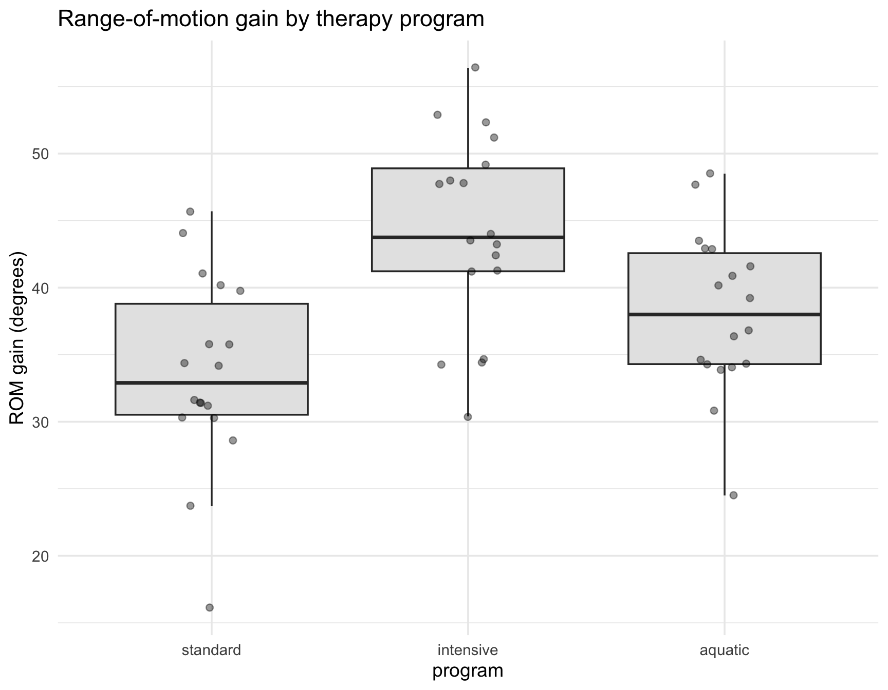
cat_multi_model <- lm(rom_gain ~ program, data = cat_multi)
summary(cat_multi_model)
Call:
lm(formula = rom_gain ~ program, data = cat_multi)
Residuals:
Min 1Q Median 3Q Max
-17.5500 -3.5167 -0.4111 4.7278 12.2389
Coefficients:
Estimate Std. Error t value Pr(>|t|)
(Intercept) 33.650 1.615 20.831 < 2e-16 ***
programintensive 10.511 2.284 4.601 2.81e-05 ***
programaquatic 4.522 2.284 1.980 0.0532 .
---
Signif. codes: 0 '***' 0.001 '**' 0.01 '*' 0.05 '.' 0.1 ' ' 1
Residual standard error: 6.853 on 51 degrees of freedom
Multiple R-squared: 0.2947, Adjusted R-squared: 0.267
F-statistic: 10.65 on 2 and 51 DF, p-value: 0.0001361check_model(cat_multi_model)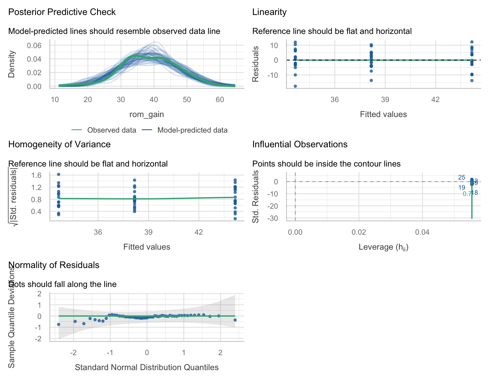
The default output includes all four SHIN panels. Linearity and Influential observations do not apply here.
To show only the homogeneity panel:
check_model(cat_multi_model, check = "homogeneity")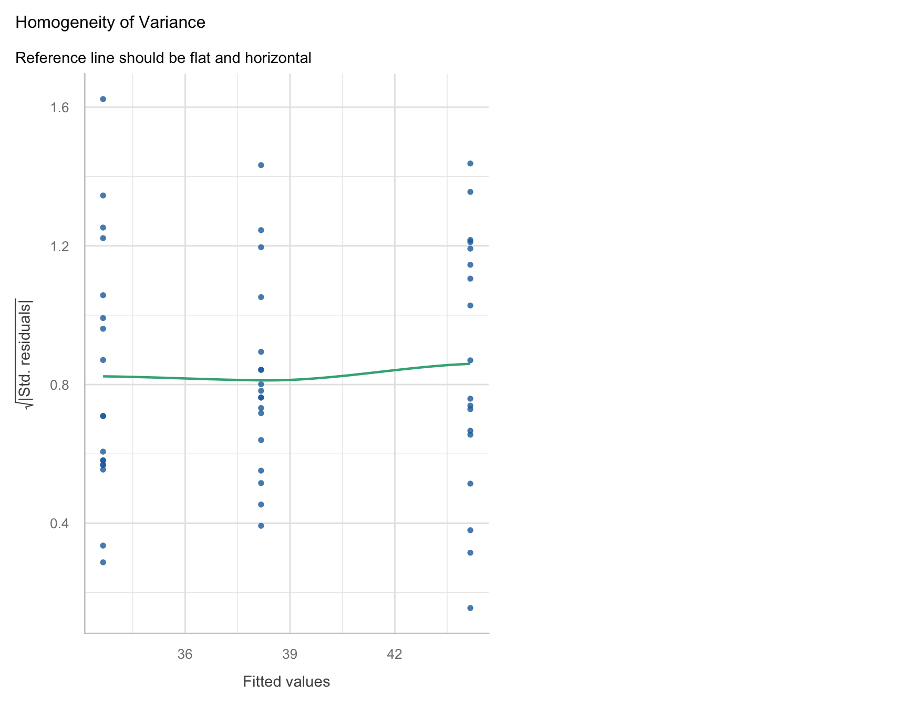
The green line is reasonably flat, indicating similar spread across groups.
Length of stay by ward type (unequal spread)
Hospital length of stay (days) for patients on general, surgical, or ICU wards.
General and surgical stays cluster tightly. ICU stays vary much more widely.
cat_poly_hom_bad <- data.frame(
ward = factor(rep(c("general", "surgical", "icu"), each = 18),
levels = c("general", "surgical", "icu")),
los_days = c(3.4, 6.7, 5.1, 4.3, 3.8, 6, 3.9, 3.8, 3.8, 4.3, 3.2, 4.1, 4.8, 3.9, 3.1, 3, 4.9, 6.2,
6.2, 8.1, 7.3, 5.8, 9.2, 6.5, 7.8, 10.1, 6.9, 8.4, 7.1, 9.5, 6.3, 8.8, 7.6, 10.3, 6.8, 9.1,
11.2, 0.5, 4.4, 7, 4, 2.3, 4.6, 9.5, 8.1, 2.9, 10.7, 0.5, 9.4, 1.3, 9.9, 4.6, 2.4, 3.4)
)ggplot(cat_poly_hom_bad, aes(ward, los_days)) +
geom_boxplot(outlier.shape = NA, fill = "grey90") +
geom_jitter(width = 0.12, alpha = 0.4, size = 2) +
labs(title = "Length of stay by ward type", y = "Length of stay (days)") +
theme_minimal(base_size = 14)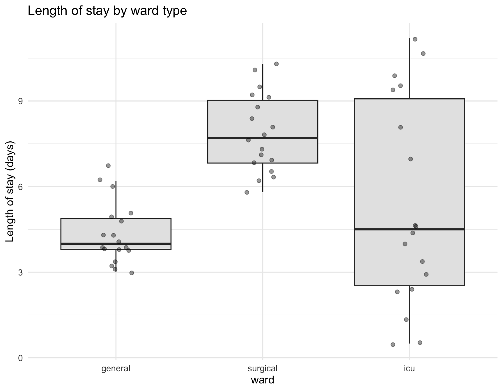
cat_poly_hom_bad_model <- lm(los_days ~ ward, data = cat_poly_hom_bad)
summary(cat_poly_hom_bad_model)
Call:
lm(formula = los_days ~ ward, data = cat_poly_hom_bad)
Residuals:
Min 1Q Median 3Q Max
-4.872 -1.225 -0.450 1.297 5.828
Coefficients:
Estimate Std. Error t value Pr(>|t|)
(Intercept) 4.3500 0.5471 7.951 1.73e-10 ***
wardsurgical 3.5278 0.7737 4.559 3.24e-05 ***
wardicu 1.0222 0.7737 1.321 0.192
---
Signif. codes: 0 '***' 0.001 '**' 0.01 '*' 0.05 '.' 0.1 ' ' 1
Residual standard error: 2.321 on 51 degrees of freedom
Multiple R-squared: 0.3015, Adjusted R-squared: 0.2741
F-statistic: 11.01 on 2 and 51 DF, p-value: 0.0001063check_model(cat_poly_hom_bad_model)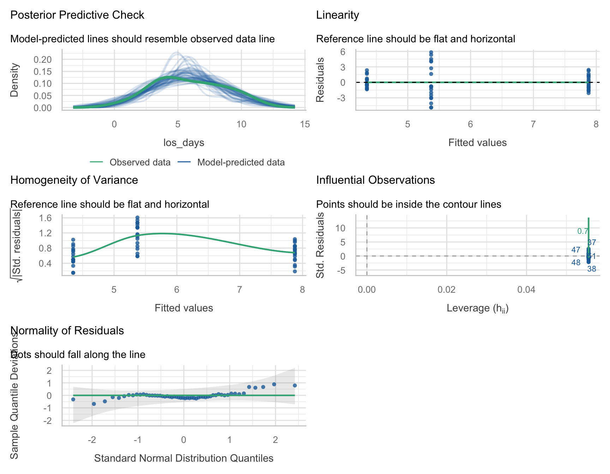
To show only the homogeneity panel:
check_model(cat_poly_hom_bad_model, check = "homogeneity")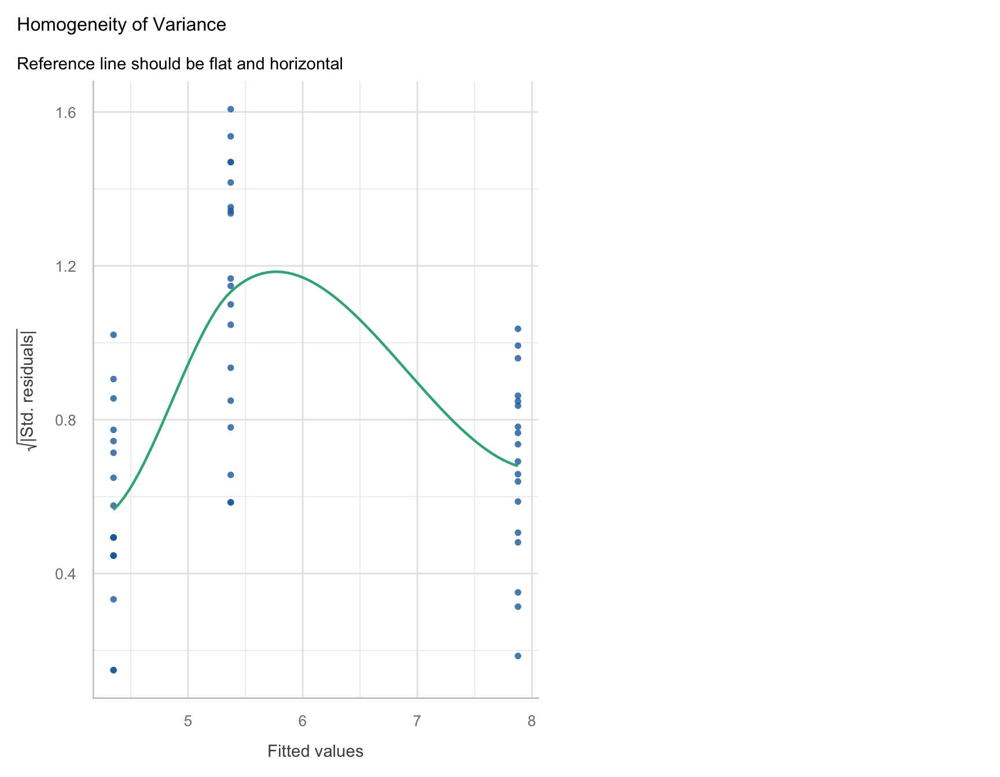
The homogeneity green line slopes upward, indicating that spread increases from general to ICU.
cat_poly_hom_bad %>%
group_by(ward) %>%
summarise(mean = mean(los_days), sd = sd(los_days), n = n())# A tibble: 3 × 4
ward mean sd n
<fct> <dbl> <dbl> <int>
1 general 4.35 1.08 18
2 surgical 7.88 1.38 18
3 icu 5.37 3.62 18The ICU standard deviation is much larger than the others.
Practice
Pain score reduction (points) for patients on one of three analgesic regimens.
Fit the model, look at the boxplot, then read the Homogeneity of variance panel. Use check_model(model, check = "homogeneity") if you want to hide the other panels. Is the spread similar across groups?
practice_6 <- data.frame(
regimen = factor(rep(c("standard", "extended", "combination"), each = 18),
levels = c("standard", "extended", "combination")),
pain_reduction = c(3.2, 4.1, 3.8, 4.5, 3.5, 4.2, 3.9, 4.0, 3.6, 4.3, 3.7, 4.4, 3.4, 4.1, 3.8, 4.2, 3.9, 4.0,
5.1, 6.2, 5.8, 6.5, 5.4, 6.0, 5.6, 6.3, 5.2, 6.1, 5.7, 6.4, 5.5, 6.0, 5.9, 6.2, 5.3, 6.1,
4.8, 12.5, 5.2, 11.8, 4.5, 13.1, 5.0, 12.2, 4.9, 11.5, 5.3, 12.8, 4.7, 13.4, 5.1, 11.9, 4.6, 12.6)
)ggplot(practice_6, aes(regimen, pain_reduction)) +
geom_boxplot(outlier.shape = NA, fill = "grey90") +
geom_jitter(width = 0.12, alpha = 0.4, size = 2) +
labs(title = "Pain reduction by analgesic regimen", y = "Pain reduction (points)") +
theme_minimal(base_size = 14)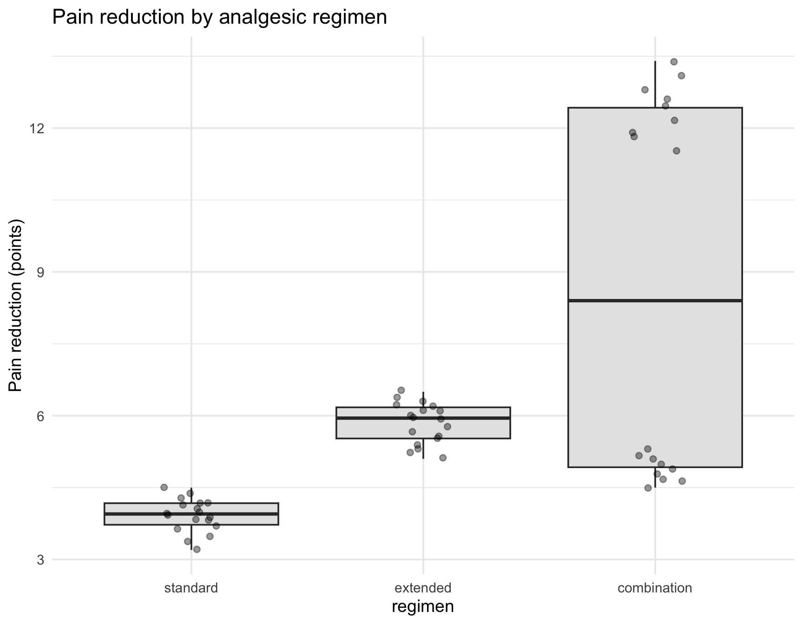
practice_6_model <- lm(pain_reduction ~ regimen, data = practice_6)
summary(practice_6_model)
Call:
lm(formula = pain_reduction ~ regimen, data = practice_6)
Residuals:
Min 1Q Median 3Q Max
-4.1611 -0.5042 0.0639 0.4319 4.7389
Coefficients:
Estimate Std. Error t value Pr(>|t|)
(Intercept) 3.9222 0.5358 7.321 1.70e-09 ***
regimenextended 1.9278 0.7577 2.544 0.014 *
regimencombination 4.7389 0.7577 6.254 8.18e-08 ***
---
Signif. codes: 0 '***' 0.001 '**' 0.01 '*' 0.05 '.' 0.1 ' ' 1
Residual standard error: 2.273 on 51 degrees of freedom
Multiple R-squared: 0.4369, Adjusted R-squared: 0.4148
F-statistic: 19.78 on 2 and 51 DF, p-value: 4.366e-07check_model(practice_6_model)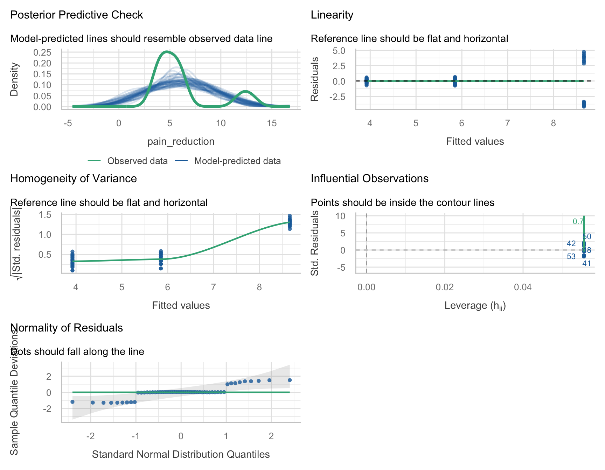
Your answer here:
N: Normality of Residuals
The question: are the residuals roughly bell-shaped?
We read the Normality of residuals panel (the Q-Q plot), as with a continuous predictor.
Knee rehabilitation program (normal residuals)
Using the three-group rehabilitation data from above.
check_model(cat_multi_model)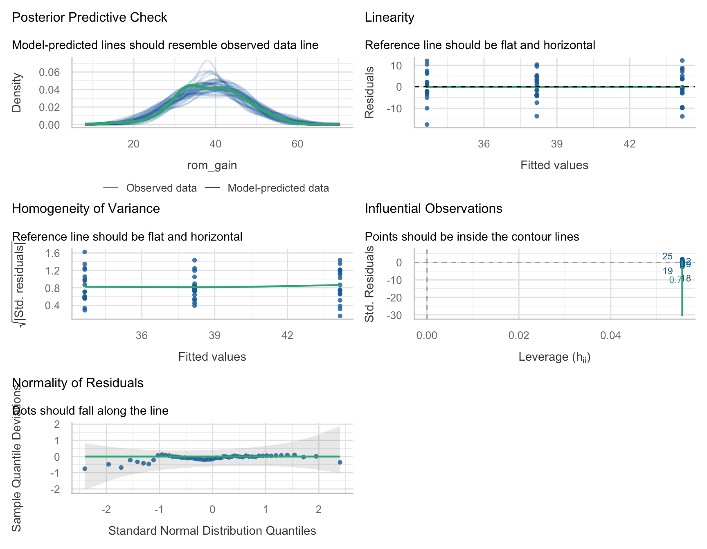
To show only the normality panel:
check_model(cat_multi_model, check = "normality")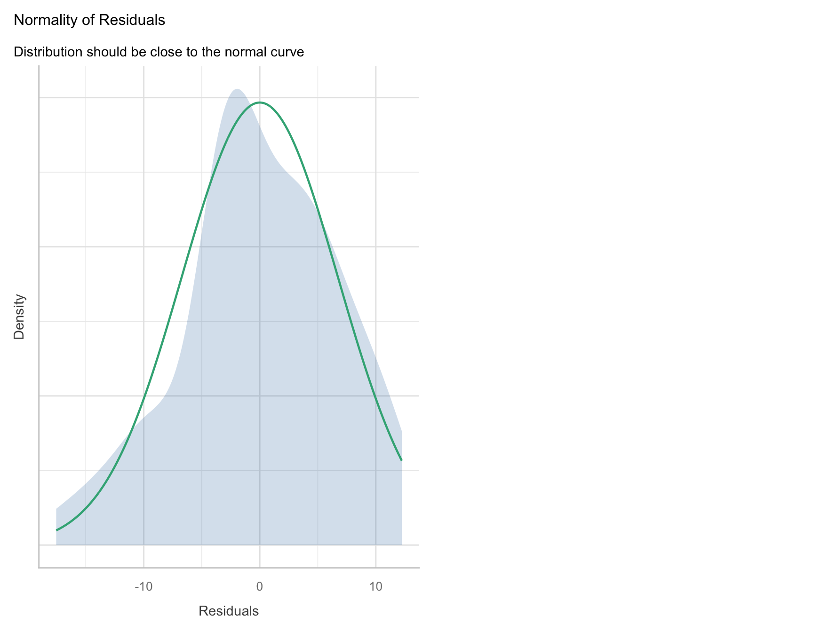
The Q-Q points lie close to the reference line across the range.
CRP level by clinic site (non-normal residuals)
C-reactive protein (mg/L) measured at three clinic sites.
Most values are moderate, but a few patients at each site have very high CRP, producing right-skewed residuals.
cat_poly_norm_bad <- data.frame(
site = factor(rep(c("clinic_a", "clinic_b", "clinic_c"), each = 18),
levels = c("clinic_a", "clinic_b", "clinic_c")),
crp_mg = c(2.1, 3.4, 2.8, 4.2, 3.1, 2.5, 3.8, 2.9, 3.5, 4.0, 2.7, 3.3, 2.4, 3.6, 2.8, 3.2, 2.6, 18.5,
2.3, 3.1, 2.9, 3.7, 2.6, 3.4, 3.0, 2.8, 3.5, 2.5, 3.2, 2.7, 3.9, 2.4, 3.1, 2.8, 3.6, 16.2,
2.5, 3.0, 2.7, 3.3, 2.9, 3.8, 2.6, 3.4, 2.8, 3.1, 2.4, 3.5, 2.7, 3.2, 2.5, 3.6, 2.9, 19.8)
)ggplot(cat_poly_norm_bad, aes(site, crp_mg)) +
geom_boxplot(outlier.shape = NA, fill = "grey90") +
geom_jitter(width = 0.12, alpha = 0.4, size = 2) +
labs(title = "CRP level by clinic site", y = "CRP (mg/L)") +
theme_minimal(base_size = 14)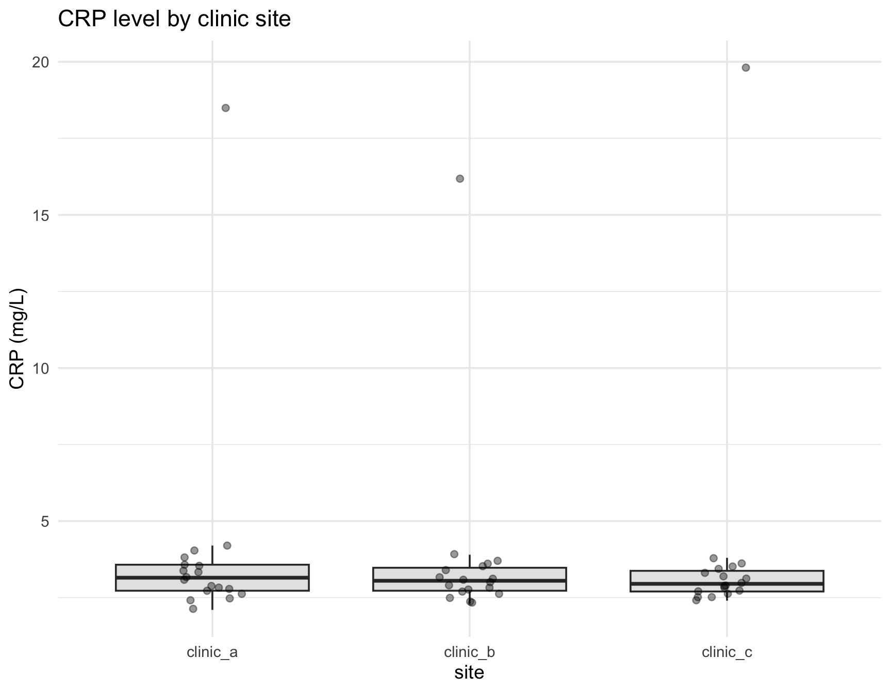
cat_poly_norm_bad_model <- lm(crp_mg ~ site, data = cat_poly_norm_bad)
summary(cat_poly_norm_bad_model)
Call:
lm(formula = crp_mg ~ site, data = cat_poly_norm_bad)
Residuals:
Min 1Q Median 3Q Max
-1.8667 -1.2125 -0.8444 -0.3819 15.8722
Coefficients:
Estimate Std. Error t value Pr(>|t|)
(Intercept) 3.96667 0.85183 4.657 2.33e-05 ***
siteclinic_b -0.20556 1.20467 -0.171 0.865
siteclinic_c -0.03889 1.20467 -0.032 0.974
---
Signif. codes: 0 '***' 0.001 '**' 0.01 '*' 0.05 '.' 0.1 ' ' 1
Residual standard error: 3.614 on 51 degrees of freedom
Multiple R-squared: 0.000644, Adjusted R-squared: -0.03855
F-statistic: 0.01643 on 2 and 51 DF, p-value: 0.9837check_model(cat_poly_norm_bad_model)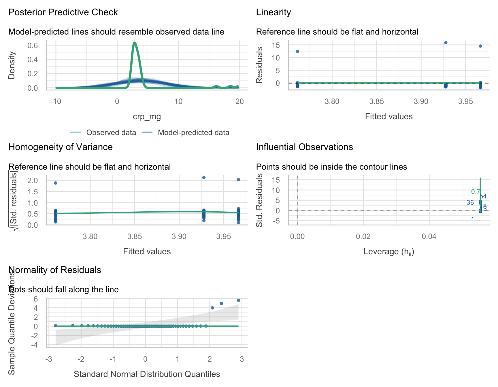
To show only the normality panel:
check_model(cat_poly_norm_bad_model, check = "normality")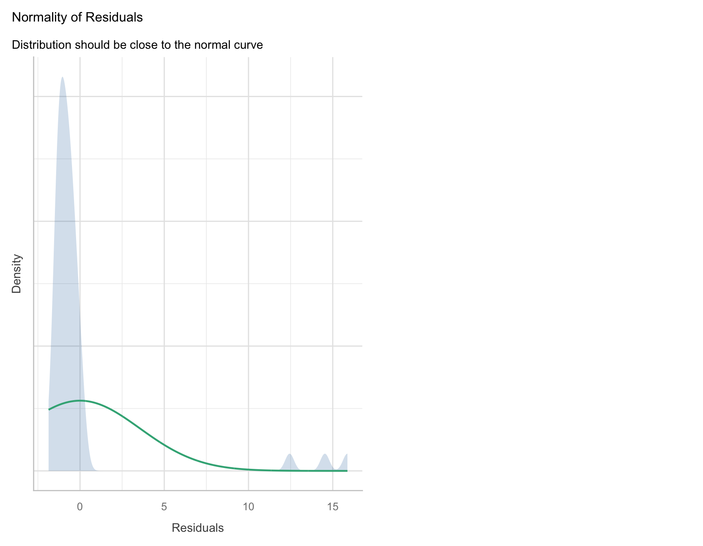
In the Normality Q-Q panel, the points bend away from the reference line at the upper end.
That is the long right tail from the high CRP values.
Practice
Serum albumin (g/dL) for patients in one of three nutritional support programs.
Fit the model, look at the boxplot, then read the Normality of residuals panel. Use check_model(model, check = "normality") if you want to hide the other panels. Are the residuals roughly bell-shaped?
practice_7 <- data.frame(
program = factor(rep(c("standard", "high_protein", "enteral"), each = 18),
levels = c("standard", "high_protein", "enteral")),
albumin = c(3.2, 3.5, 3.4, 3.6, 3.3, 3.5, 3.4, 3.7, 3.3, 3.6, 3.5, 3.4, 3.3, 3.6, 3.5, 3.4, 3.7, 3.3,
3.4, 3.6, 3.5, 3.7, 3.4, 3.6, 3.5, 3.8, 3.4, 3.6, 3.5, 3.7, 3.4, 3.6, 3.5, 3.7, 3.4, 3.6,
3.3, 3.5, 3.4, 3.6, 3.5, 3.4, 3.7, 3.3, 3.5, 3.6, 3.4, 3.5, 3.3, 3.6, 3.4, 3.5, 3.7, 3.3)
)ggplot(practice_7, aes(program, albumin)) +
geom_boxplot(outlier.shape = NA, fill = "grey90") +
geom_jitter(width = 0.12, alpha = 0.4, size = 2) +
labs(title = "Serum albumin by nutritional support program", y = "Albumin (g/dL)") +
theme_minimal(base_size = 14)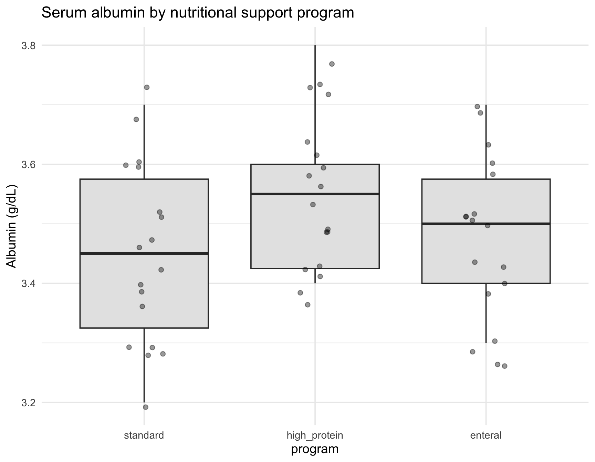
practice_7_model <- lm(albumin ~ program, data = practice_7)
summary(practice_7_model)
Call:
lm(formula = albumin ~ program, data = practice_7)
Residuals:
Min 1Q Median 3Q Max
-0.25556 -0.13056 0.02778 0.10833 0.25000
Coefficients:
Estimate Std. Error t value Pr(>|t|)
(Intercept) 3.45556 0.03175 108.827 <2e-16 ***
programhigh_protein 0.09444 0.04491 2.103 0.0404 *
programenteral 0.01667 0.04491 0.371 0.7121
---
Signif. codes: 0 '***' 0.001 '**' 0.01 '*' 0.05 '.' 0.1 ' ' 1
Residual standard error: 0.1347 on 51 degrees of freedom
Multiple R-squared: 0.08995, Adjusted R-squared: 0.05426
F-statistic: 2.52 on 2 and 51 DF, p-value: 0.0904check_model(practice_7_model)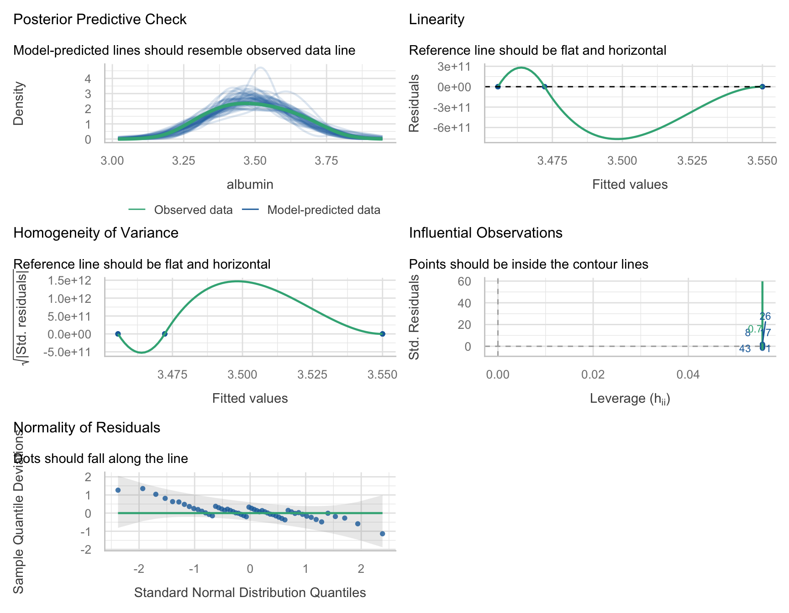
Your answer here:
Categorical binary predictor
A binary predictor has exactly two levels (for example, exposed vs. unexposed).
Regression with one binary categorical predictor is the same model as an independent-samples t-test. The regression coefficient is the difference between the two group means.
So the assumptions are the same as for the usual pooled t-test:
- observations are independent
- residuals are roughly normal within each group
- the two groups have similar spread
This is why we focus on H and N below. If you use Welch’s t-test, that version relaxes the equal-variance assumption, but ordinary lm() uses the pooled-variance version unless you deliberately change the standard errors.
The same reasoning as above applies: Shape and Influential points are not meaningful checks.
Only H and N apply.
The default check_model() output still includes all four SHIN panels. Use check = c("homogeneity", "normality") to show only the two that apply.
H: Homoscedasticity (Equal Variance)
The question here is: is the spread of the outcome similar in each group?
Read the Homogeneity of variance panel in check_model() first. For a binary predictor, the green line in that panel is not reliable; use the base R scale-location plot (plot(model, which = 3)) to compare spread across groups.
Birth weight by smoking status (equal spread)
Birth weight (grams) for babies of non-smokers vs. smokers.
cat_binary <- data.frame(
smoke = factor(rep(c("nonsmoker", "smoker"), c(19, 17)),
levels = c("nonsmoker", "smoker")),
birth_weight = c(3059, 3040, 3296, 3245, 3516, 2899, 3803, 3343, 3256, 3212, 3835, 3172, 3377, 3249, 4051, 3031, 3321, 2355, 3687,
2681, 3618, 3019, 2849, 3302, 2687, 3969, 3035, 2681, 3109, 3090, 2603, 2830, 3349, 3014, 2962, 2566)
)ggplot(cat_binary, aes(smoke, birth_weight)) +
geom_boxplot(outlier.shape = NA, fill = "grey90") +
geom_jitter(width = 0.12, alpha = 0.4, size = 2) +
labs(title = "Birth weight by smoking status", y = "Birth weight (g)") +
theme_minimal(base_size = 14)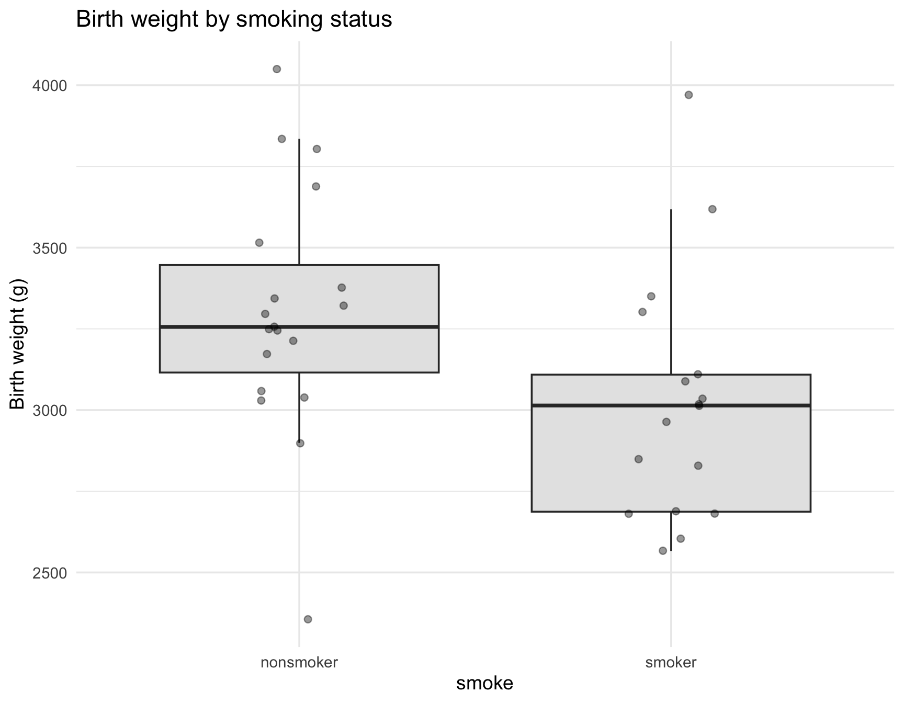
cat_binary_model <- lm(birth_weight ~ smoke, data = cat_binary)
summary(cat_binary_model)
Call:
lm(formula = birth_weight ~ smoke, data = cat_binary)
Residuals:
Min 1Q Median 3Q Max
-947.47 -248.22 -26.94 119.07 947.59
Coefficients:
Estimate Std. Error t value Pr(>|t|)
(Intercept) 3302.47 86.56 38.154 <2e-16 ***
smokesmoker -281.06 125.96 -2.231 0.0324 *
---
Signif. codes: 0 '***' 0.001 '**' 0.01 '*' 0.05 '.' 0.1 ' ' 1
Residual standard error: 377.3 on 34 degrees of freedom
Multiple R-squared: 0.1277, Adjusted R-squared: 0.1021
F-statistic: 4.979 on 1 and 34 DF, p-value: 0.03235check_model(cat_binary_model)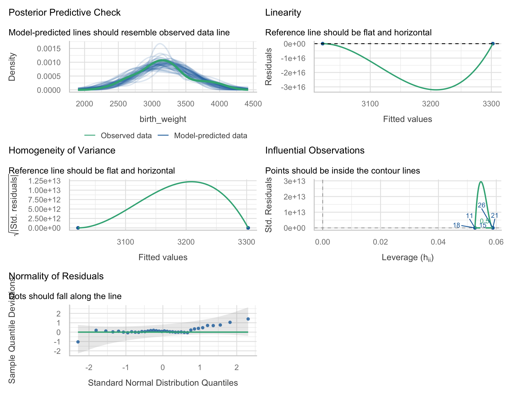
To show only the panels that apply:
check_model(cat_binary_model, check = c("homogeneity", "normality"))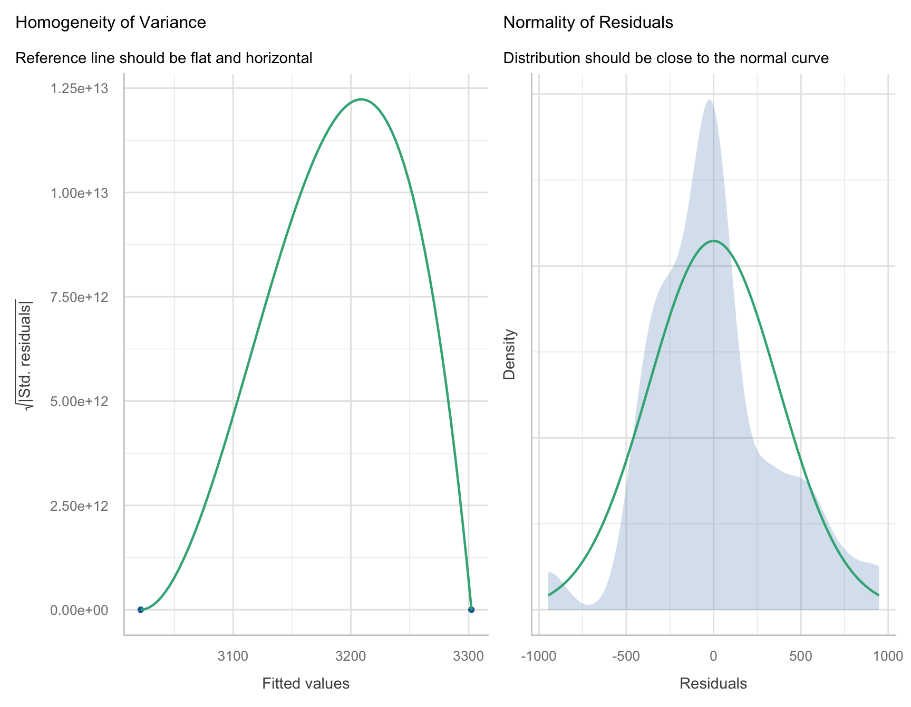
Look at the Homogeneity of variance panel:
check_model(cat_binary_model, check = "homogeneity")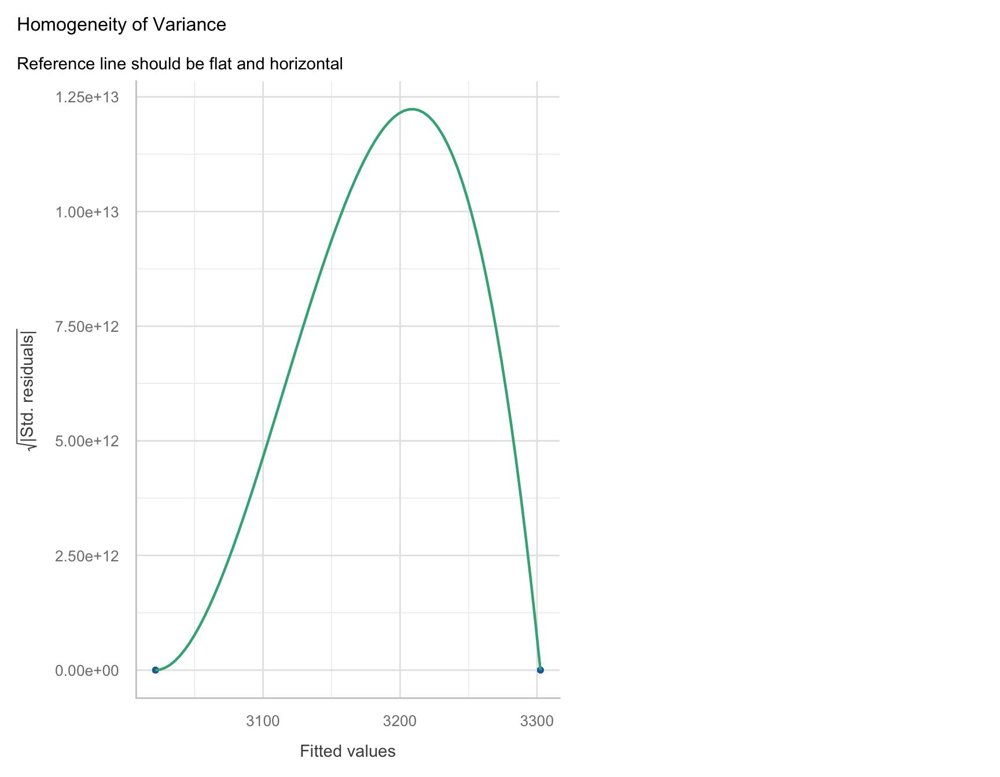
There are only two fitted values (one per group), but check_model() still draws a smooth curve through them. Interpolating between two points is unstable, so the green line can shoot up to extreme values. That does not mean the model is wrong; the line just does not make sense here. The dots are still the residuals you would compare across groups.
For the actual check, use base R instead:
plot(cat_binary_model, which = 3)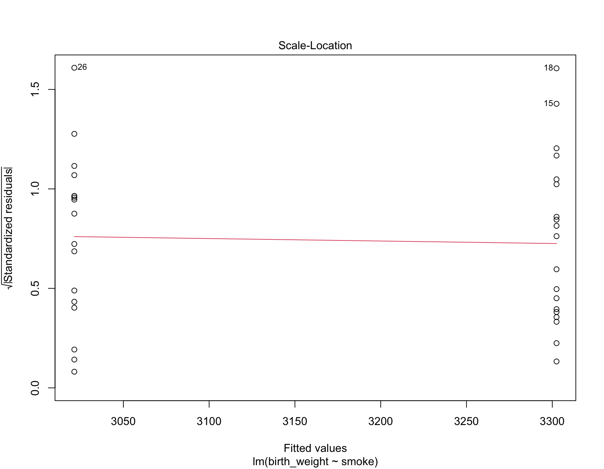
The plot shows two vertical strips of points, one per group.
The two strips are similar in height.
cat_binary %>%
group_by(smoke) %>%
summarise(mean = mean(birth_weight), sd = sd(birth_weight), n = n())# A tibble: 2 × 4
smoke mean sd n
<fct> <dbl> <dbl> <int>
1 nonsmoker 3302. 379. 19
2 smoker 3021. 375. 17The standard deviations are similar, so the equal-variance assumption is satisfied.
ICU length of stay by admission type (unequal spread)
ICU length of stay (days) for elective vs. emergency admissions.
Elective admissions have shorter, more predictable stays. Emergency admissions vary more widely.
cat_hom_bad <- data.frame(
admission = factor(rep(c("elective", "emergency"), c(18, 18)),
levels = c("elective", "emergency")),
los_days = c(3.4, 6.7, 5.1, 4.3, 3.8, 6, 3.9, 3.8, 3.8, 4.3, 3.2, 4.1, 4.8, 3.9, 3.1, 3, 4.9, 6.2,
11.2, 0.5, 4.4, 7, 4, 2.3, 4.6, 9.5, 8.1, 2.9, 10.7, 0.5, 9.4, 1.3, 9.9, 4.6, 2.4, 3.4)
)ggplot(cat_hom_bad, aes(admission, los_days)) +
geom_boxplot(outlier.shape = NA, fill = "grey90") +
geom_jitter(width = 0.12, alpha = 0.4, size = 2) +
labs(title = "ICU length of stay by admission type", y = "Length of stay (days)") +
theme_minimal(base_size = 14)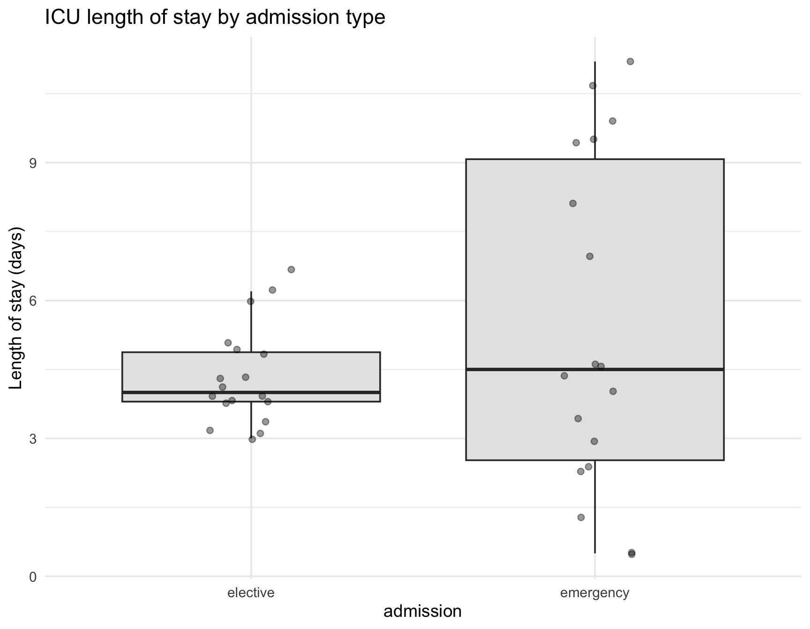
cat_hom_bad_model <- lm(los_days ~ admission, data = cat_hom_bad)
summary(cat_hom_bad_model)
Call:
lm(formula = los_days ~ admission, data = cat_hom_bad)
Residuals:
Min 1Q Median 3Q Max
-4.872 -1.275 -0.500 1.633 5.828
Coefficients:
Estimate Std. Error t value Pr(>|t|)
(Intercept) 4.3500 0.6292 6.914 5.75e-08 ***
admissionemergency 1.0222 0.8898 1.149 0.259
---
Signif. codes: 0 '***' 0.001 '**' 0.01 '*' 0.05 '.' 0.1 ' ' 1
Residual standard error: 2.669 on 34 degrees of freedom
Multiple R-squared: 0.03737, Adjusted R-squared: 0.009053
F-statistic: 1.32 on 1 and 34 DF, p-value: 0.2587Use the base R scale-location plot to compare spread across groups:
plot(cat_hom_bad_model, which = 3)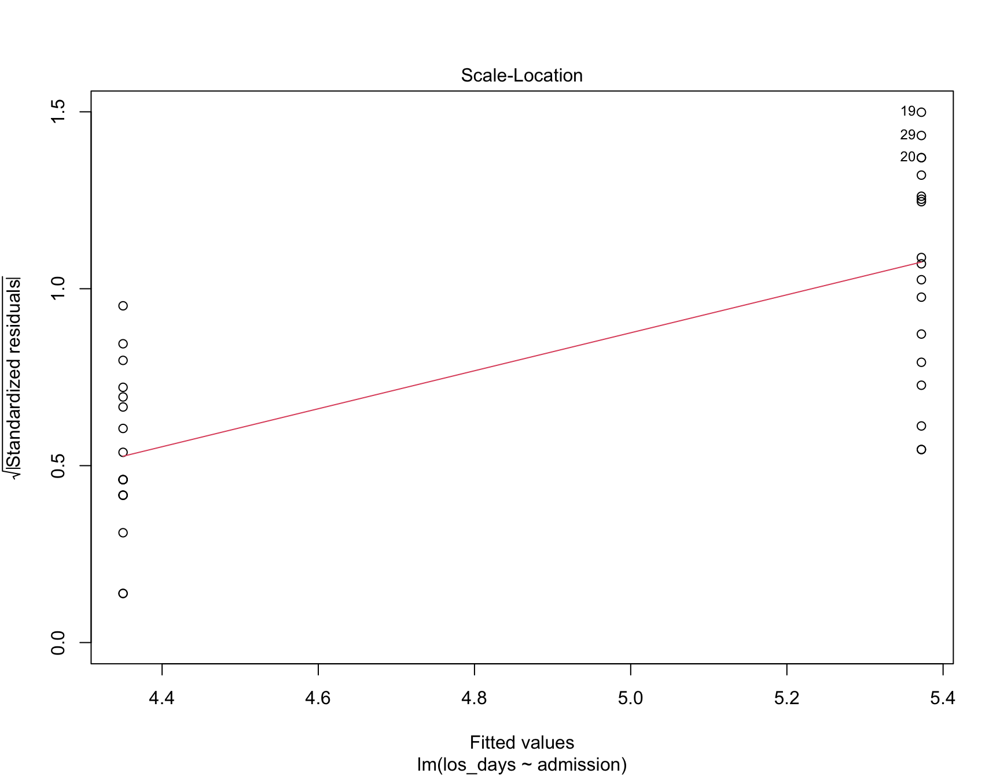
cat_hom_bad %>%
group_by(admission) %>%
summarise(mean = mean(los_days), sd = sd(los_days), n = n())# A tibble: 2 × 4
admission mean sd n
<fct> <dbl> <dbl> <int>
1 elective 4.35 1.08 18
2 emergency 5.37 3.62 18The emergency strip is taller than the elective strip, and the standard deviations confirm unequal spread.
The homogeneity assumption is violated.
Practice
A clinical trial of a blood-pressure drug. Systolic blood pressure (mmHg) for patients on placebo vs. the active drug.
Fit the model, look at the boxplot, then read the Homogeneity of variance panel in check_model(). Use check_model(model, check = "homogeneity") to hide the other panels, and plot(model, which = 3) to compare spread across groups. Is the spread similar in each group?
practice_5 <- data.frame(
treatment = factor(rep(c("placebo", "drug"), c(18, 18)),
levels = c("placebo", "drug")),
systolic_bp = c(141, 142, 151, 141, 123, 146, 135, 149, 149, 132, 144, 142, 159, 144, 148, 142, 141, 145,
132, 126, 127, 134, 138, 135, 133, 133, 136, 149, 114, 123, 145, 132, 129, 138, 129, 144)
)ggplot(practice_5, aes(treatment, systolic_bp)) +
geom_boxplot(outlier.shape = NA, fill = "grey90") +
geom_jitter(width = 0.12, alpha = 0.4, size = 2) +
labs(title = "Systolic blood pressure by treatment", y = "Systolic BP (mmHg)") +
theme_minimal(base_size = 14)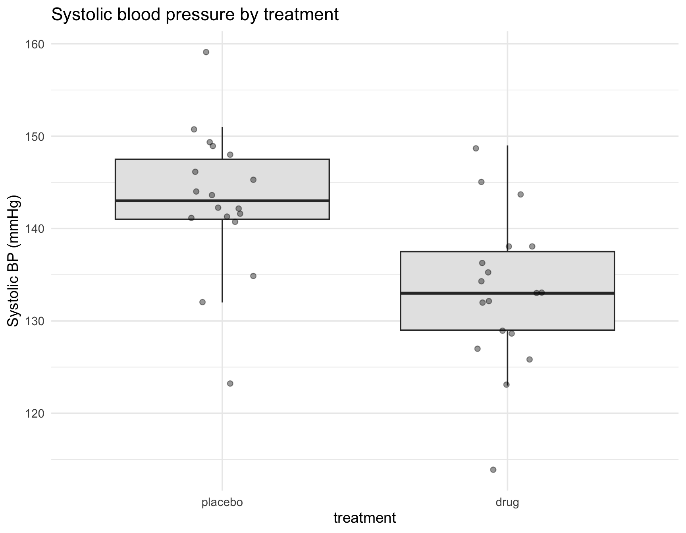
practice_5_model <- lm(systolic_bp ~ treatment, data = practice_5)
summary(practice_5_model)
Call:
lm(formula = systolic_bp ~ treatment, data = practice_5)
Residuals:
Min 1Q Median 3Q Max
-20.0000 -2.5417 -0.1667 4.8333 16.0000
Coefficients:
Estimate Std. Error t value Pr(>|t|)
(Intercept) 143.000 1.894 75.48 < 2e-16 ***
treatmentdrug -9.833 2.679 -3.67 0.000824 ***
---
Signif. codes: 0 '***' 0.001 '**' 0.01 '*' 0.05 '.' 0.1 ' ' 1
Residual standard error: 8.038 on 34 degrees of freedom
Multiple R-squared: 0.2838, Adjusted R-squared: 0.2627
F-statistic: 13.47 on 1 and 34 DF, p-value: 0.0008239check_model(practice_5_model)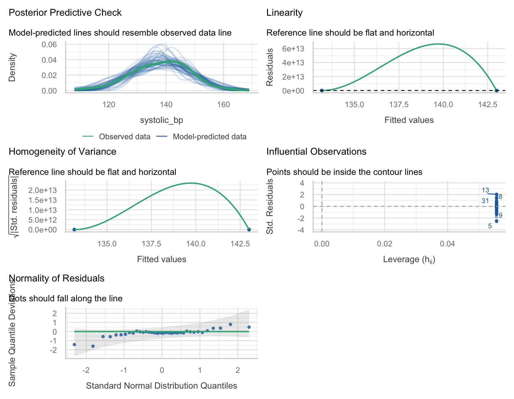
plot(practice_5_model, which = 3)Your answer here:
N: Normality of Residuals
The question: are the residuals roughly bell-shaped?
We read the Normality of residuals panel in check_model().
Birth weight by smoking status (normal residuals)
Using the birth weight data from above.
check_model(cat_binary_model, check = "normality")The Q-Q points lie close to the reference line.
Hospital charges by insurance type (non-normal residuals)
Total hospital charges (USD) for privately insured vs. publicly insured patients.
A few very high charges among privately insured patients produce right-skewed residuals.
cat_bin_norm_bad <- data.frame(
insurance = factor(rep(c("public", "private"), c(20, 20)),
levels = c("public", "private")),
charges = c(4200, 5100, 4800, 5300, 4600, 4900, 5200, 4500, 5000, 4700, 5100, 4400, 4900, 4600, 5200, 4800, 5000, 4700, 5100, 4900,
8200, 9100, 7800, 9500, 8600, 8800, 9200, 8400, 8900, 8700, 9000, 8300, 8800, 8500, 9100, 8600, 8900, 8400, 8700, 28500)
)ggplot(cat_bin_norm_bad, aes(insurance, charges)) +
geom_boxplot(outlier.shape = NA, fill = "grey90") +
geom_jitter(width = 0.12, alpha = 0.4, size = 2) +
labs(title = "Hospital charges by insurance type", y = "Charges (USD)") +
theme_minimal(base_size = 14)cat_bin_norm_bad_model <- lm(charges ~ insurance, data = cat_bin_norm_bad)
summary(cat_bin_norm_bad_model)
Call:
lm(formula = charges ~ insurance, data = cat_bin_norm_bad)
Residuals:
Min 1Q Median 3Q Max
-1900 -925 -400 50 18800
Coefficients:
Estimate Std. Error t value Pr(>|t|)
(Intercept) 4850.0 703.9 6.891 3.46e-08 ***
insuranceprivate 4850.0 995.4 4.872 1.98e-05 ***
---
Signif. codes: 0 '***' 0.001 '**' 0.01 '*' 0.05 '.' 0.1 ' ' 1
Residual standard error: 3148 on 38 degrees of freedom
Multiple R-squared: 0.3845, Adjusted R-squared: 0.3683
F-statistic: 23.74 on 1 and 38 DF, p-value: 1.976e-05check_model(cat_bin_norm_bad_model)To show only the normality panel:
check_model(cat_bin_norm_bad_model, check = "normality")In the Normality Q-Q panel, the points bend away from the reference line at the upper end.
That is the long right tail from the high charge values.
Practice
Peak expiratory flow (L/min) for patients with vs. without a chronic respiratory condition.
Fit the model, look at the boxplot, then read the Normality of residuals panel in check_model(). Use check_model(model, check = "normality") if you want to hide the other panels. Are the residuals roughly bell-shaped?
practice_8 <- data.frame(
condition = factor(rep(c("none", "chronic"), c(18, 18)),
levels = c("none", "chronic")),
peak_flow = c(420, 435, 410, 445, 430, 425, 440, 415, 450, 428, 438, 422, 442, 418, 448, 432, 426, 444,
310, 325, 305, 330, 315, 320, 328, 308, 332, 312, 318, 322, 326, 310, 324, 316, 320, 314)
)ggplot(practice_8, aes(condition, peak_flow)) +
geom_boxplot(outlier.shape = NA, fill = "grey90") +
geom_jitter(width = 0.12, alpha = 0.4, size = 2) +
labs(title = "Peak expiratory flow by respiratory condition", y = "Peak flow (L/min)") +
theme_minimal(base_size = 14)practice_8_model <- lm(peak_flow ~ condition, data = practice_8)
summary(practice_8_model)
Call:
lm(formula = peak_flow ~ condition, data = practice_8)
Residuals:
Min 1Q Median 3Q Max
-21.5556 -7.1111 -0.0833 7.6528 18.4444
Coefficients:
Estimate Std. Error t value Pr(>|t|)
(Intercept) 431.556 2.386 180.85 <2e-16 ***
conditionchronic -112.944 3.375 -33.47 <2e-16 ***
---
Signif. codes: 0 '***' 0.001 '**' 0.01 '*' 0.05 '.' 0.1 ' ' 1
Residual standard error: 10.12 on 34 degrees of freedom
Multiple R-squared: 0.9705, Adjusted R-squared: 0.9697
F-statistic: 1120 on 1 and 34 DF, p-value: < 2.2e-16check_model(practice_8_model)Your answer here: